What's new in 2.0
Studio becomes a place for the whole team. Administrators decide who sees what, project by project; each person
works on a project with the role they have there; a project is a hub with its repository, its servers and its
passwords next to the chat. The agent gets a browser and sandboxes, and Studio drives the clouds the servers run
on. The full list is in CHANGELOG.md.
The team works in projects
- A role per project
- A person is an administrator, who sees and runs everything, or a member with a role on each project: a developer here may be the PM there and a client elsewhere. The chat, the presets, the MCP servers, the shared passwords, folders and SSH connections and the attached infrastructure all read it. See A role per project.
- The project is a hub
- Tabs on a row of their own under its header: Workspace, Repository (pull requests, issues, branches, pipelines and releases, with your own account), Infrastructure, Access and, for administrators, Settings, now a page of its own. See The project's tabs.
- A key for every project
- Studio makes it from the name and six random characters
(
api-9usaf9). It names the site, the previews, the Linux user and the databases, and never changes; the name is free, so two clients may both have an "API". See A project.
- Home
- An inbox across every project: conversations that ask something, failed or finished since you last looked; failed workspaces and sites; what waits on each git account. New people get the three steps that make Studio work for them. See Home & the menu.
- Infrastructure attached to projects
- A Droplet, a server, a zone, a Cipi app or a Boogle project goes into a project's Infrastructure tab, with the roles that see it, the roles that act on it and the actions they may run. Members never see the account behind it. See Attached to projects.
- Navigation
- The menu keeps its groups: Studio (Home, Projects), Infrastructure, Tools (Git, SSH terminal, Password manager, Drive) and Administration. See The menu.
Accounts and git
- Settings → Accounts
- Your Claude, Git and SSH keys in one page, three tabs. Add, check and remove your git accounts there, as many as you work with. See Your accounts.
- Every git host, always
- GitHub, GitLab, Bitbucket Cloud and Azure DevOps are all there for everyone, and a project may live on any of them. A workspace commits with your account on the host of its repository, with that account's name and email. See The git hosts.
- Service accounts
- The team's own tokens, in Administration → Connectors → Git hosting, create repositories, register webhooks and deploy the sites, and keep doing it when an administrator leaves. See Service accounts.
- Tools → Git
- One dashboard across all your git accounts: pull requests waiting for your review, issues, notifications, repositories with their branches, pipelines and releases. Review, merge, create. See Git.
- Several Claude accounts
- Subscriptions, each signed in with Claude Code's own
claude auth loginin your home on the server, and API keys, side by side; one is your default. The account goes with every message, so a change needs no restart. See Claude accounts.
- Groups of projects
- Your own groups (Personal, Work, Clients…), each with the Claude account and the git account its projects use; a project may pick others. See Groups of projects.
The agent sees, delegates and works apart
- A browser for the agent
- A headless Chromium on the server, signed in to the preview as you: Claude opens pages, takes screenshots, reads the console and the failed requests. See The agent's browser.
- Screenshots in the chat
- Images in tool results show as thumbnails under their call, full size on a click, served only to who may read the conversation.
- Subagents as cards
- Each subagent is a card with its status, steps, time, screenshots and report;
those started together sit side by side. Studio adds
code-reviewerandbrowser-qa. See Subagents.
- Conversations in a sandbox
- A git worktree of your workspace on its own branch, with a copy of the database and a preview of its own. Several run at once; merge the one you keep, or push its branch. See Sandboxes.
- A more readable Changes tab
- Each file with an icon for its kind, its name in the colour of what happened to it, and the lines it adds and removes. See Changes, history & branches.
Infrastructure
- Connectors
- AWS, DigitalOcean, Hetzner Cloud, Cloudflare, Cipi, Boogle, Hackly and Johnny, driven through their APIs, each with any number of accounts: servers, DNS, firewalls, volumes, databases, apps, deploys, exceptions and security findings. For administrators. See Connectors.
- Safe by default
- Credentials are checked against the provider and stored encrypted; the pages ask for the password again; every action is logged with who did it. Every connector starts off.
Upgrading from 1.1 needs nothing by hand. The update migrates: every membership keeps the role its person had,
existing projects keep their keys and their hosts, and the Claude account and git token each person had become
their first accounts in Settings → Accounts. It installs Playwright MCP and its Chromium, and gives every
bridge its new variables (installer/upgrades/2.0.0.sh). Worth doing once it is live: add a
service account and choose it in each project's Settings → General, then
attach each project's servers and zones from the connectors' pages.
One server, one script
A fresh Ubuntu 24.04 or 26.04 VPS, a domain, an account on GitHub, GitLab, Bitbucket or Azure DevOps. The installer asks five questions and does the rest.
-
wget -qO- https://raw.githubusercontent.com/andreapollastri/studio/refs/heads/main/installer/install.sh | sudo bash
- The domain. You type it, for example
dev.example.com. The script shows the one DNS record to create:*.dev.example.com → A → your server's IP. - The check. It resolves a random name under the wildcard and
studio.<domain>through a public resolver and waits until both point at the server. You can skip and fix DNS later; certificates are issued on demand when hosts resolve. - The first administrator. Name and email. The password is generated: the summary shows it, with the dashboard's address and the email, in a yellow box before anything is installed, and again at the end. Save it then; nothing shows it later. Studio has no public sign-up and no social login: accounts are created here and in the dashboard, and people sign in with a password.
- Your git host. GitHub, GitLab (gitlab.com or your own), Bitbucket Cloud or Azure DevOps (with its organization): the host of your first token. It does not tie Studio to it: all four, the same forges Larapilot integrates with, are there for everyone, and a project may live on any of them. See The git hosts.
- Your token there. With the instructions on screen you create it; the script verifies it with the host and stores it as your first git account. It can create repositories and deploy project sites. Every other person adds their own later; the team's service accounts are added in the dashboard.
Then it installs the newest release of Studio, the latest published vX.Y.Z tag (the head of the main
branch only while no release is published; the first release then replaces it), with what it needs:
Caddy, PHP 8.3, 8.4 and 8.5 (8.5 alone on Ubuntu 26.04, see below), Composer, Node, Claude Code, the CLI of your git
host (gh, glab or the Azure CLI), MariaDB, PostgreSQL and redis. Ten minutes later:
-
https://studio.<domain>
Sign in, turn on two-factor authentication, add your Claude account in Settings → Accounts. Add the team's service account in Administration → Connectors → Git hosting if you have one, create the first project in Administration → Projects, invite the team in Administration → People and give each person a role on it. From then on Studio updates itself every night to the newest release; see Updates.
Requires: Ubuntu 24.04 or 26.04 LTS (with sudo or Ubuntu
26.04's sudo-rs), amd64 or arm64, 4 GB of
memory or more · a domain with a wildcard record · a git account per person on the host of their projects · a Claude subscription or an
Anthropic API key per person who chats · Laravel projects with Larapilot (Studio installs it, with Laravel Boost, in
the repositories it creates).
What it installs
installer/install.sh turns a bare Ubuntu into the whole thing, and the same steps (in
installer/lib/system.sh) run again at every update, so a release can bring what it needs. What apt prints
goes to /var/log/studio-install.log; when a package fails, the installer shows the end of it. Run on a
server where Studio is installed, the script starts the updater instead of asking questions; after an installation that
stopped halfway it starts again from the questions. Beta testers install the head of the main branch instead of the
newest release, and keep following it (see Updates):
-
wget -qO- https://raw.githubusercontent.com/andreapollastri/studio/refs/heads/main/installer/install.sh | sudo STUDIO_CHANNEL=beta bash
| Piece | Role |
|---|---|
| Caddy | HTTPS for every host under the domain, with certificates issued on demand: before issuing one, Caddy asks Studio whether the host is known. No DNS API token, no per-host certbot runs. |
| PHP 8.3, 8.4, 8.5 | From ppa:ondrej/php, with the usual extensions and PHP-FPM. Each project picks its version; a pool per site and per workspace runs as its own user. The list comes from the release's installer/requirements.env, so a later release can add a version. Where the PPA does not serve the Ubuntu release yet (26.04 at first), PHP comes from Ubuntu's own archive, which carries PHP 8.5 alone: Studio runs on it and projects can pick it; the next update adds 8.3 and 8.4 once the PPA serves 26.04. |
| Composer, Node 22, Claude Code | What a Laravel project and the agent need. Claude Code is installed once, system-wide; each workspace runs it with its own login, and every update of Studio brings the newest one. |
| The git hosts' CLIs | gh for GitHub, glab for GitLab, the Azure CLI with the azure-devops extension for Azure DevOps; nothing for Bitbucket, whose REST API Larapilot calls directly. The installer puts in the one of the first token's host; another is installed the first time a workspace on its host needs it. The agents open pull requests with it. |
| Playwright MCP, Chromium | The agent's browser: Playwright MCP at the version pinned in installer/requirements.env, its headless Chromium in /usr/local/lib/studio/browsers, and an AppArmor profile so Chromium keeps its own sandbox on Ubuntu 24.04 and later. |
| MariaDB, PostgreSQL, redis | Each project picks an engine; every site and every workspace gets a database and a user of its own. Redis is shared with a prefix per site. |
| Studio | The newest release tag (or, for beta testers, the head of main) in /opt/studio/releases/<build>, with /opt/studio/current pointing at it and the .env and storage shared in /opt/studio/shared; built, migrated, served at studio.<domain>; a queue worker, a scheduler and Reverb as systemd services. |
studio-admin | The privileged helper in /usr/local/sbin: the only thing the studio user may run as root, through sudo, for a fixed list of commands. Everything on the server is done through it. |
studio-update | The updater in /usr/local/sbin, run by root: nightly by a systemd timer, on demand from Administration → System. See Updates. |
studio-recover | Root's tool in /usr/local/sbin, mode 0700: resets the main administrator from an SSH session when every account is locked out, and edits and reloads Studio's .env (outgoing email). Nothing in Studio calls it. See Locked out. |
studio-domain | Root's tool in /usr/local/sbin, mode 0700: the domain's DNS, its move to another domain, and the certificates. See Domain & visibility. |
| ufw, fail2ban | Ports 22, 80 and 443 open; brute force on SSH banned. |
Where things land
DNS and certificates
One wildcard record is enough: *.<domain> → the server. When a browser asks for
maria-shop.<domain> for the first time, Caddy calls
http://127.0.0.1:8081/api/tls/ask?domain=…; Studio answers 200 for its own host, a project key or a
workspace preview it knows, and Caddy issues the certificate. Any other name under the domain shows Studio's
welcome page; it gets a certificate too, but only for a few new names a day
(STUDIO_WELCOME_CERTIFICATES_PER_DAY, default 3), so that strangers typing random names cannot use up
the Let's Encrypt limits the real hosts need. Past that, an unknown name gets no certificate at all.
Trying it on your Mac first?
Studio runs without the server pieces: the local driver points every workspace at one bridge on
your machine, driving the claude you already use. composer setup, an admin,
composer run dev, then the bridge inside any Laravel project with Larapilot. The demo seeder gives
you an agency with five projects (two of them called "API"), four people with a role on each, and a live
conversation. See Local development.
Five words
Everything in Studio is one of these.
A Laravel repository with Larapilot installed, on any of the four git hosts, its deploy branch, the PHP version
and database it needs, the staging site where the deploy branch runs, and the people on it, each with a role
there: PM, developer or client. An administrator creates it and Studio gives it a key (shop-k2mx7p)
that names its hosts and its place on the server. Its page has tabs for the workspace, the repository, the
infrastructure and the access of the person's role, and for administrators its settings. Studio itself never
commits to the repository: people and their agents do, with their own accounts.
One clone per person × project on the server, under a Linux user of that person: the repository on the deploy
branch, dependencies installed, a database of its own copied from the project site, Claude Code running with
that person's credential, the bridge. Served at <user>-<key>.<domain>. A PM
has one just like a developer: the skills that write the PRD or approve a story need a checkout to commit to.
A Claude Code session inside the workspace, kept by Studio with its transcript and its session id, so it resumes days later with its memory. Several conversations can live in one workspace; each is a separate session. A conversation may also run in a sandbox: a copy of the workspace on its own branch, with its own database and preview.
A small Node service inside the workspace. Studio sends it the person's message; it drives claude
in stream-json mode, posts every event back to Studio, and holds a permission question until the
person answers it. Zero dependencies, one process per conversation, released after an idle period.
The deploy branch, served by the same server at <key>.<domain>. Studio creates it
when the project is created, registers a push webhook on its git host, and redeploys it on every push to the
deploy branch.
Its Larapilot dashboard is what the PM watches; its API feeds the Board; its database seeds new workspaces.
Where things live
| Place | What runs there | What is stored there |
|---|---|---|
| Browser | Studio's interface: Home, the projects with their tabs, the chat, and next to it the preview, the changes and the history, a terminal and an editor; the tools; the administration | Nothing but the session cookie |
| The server | Caddy, Studio (Laravel 13 + Reverb), PHP-FPM pools, MariaDB and PostgreSQL, redis; one Linux user per person for their workspaces, one per project for its site; a bridge service per workspace | Accounts, projects, transcripts, permission decisions, encrypted tokens; the clones, the databases, each person's Claude login in their home |
| Outside | The git hosts: GitHub, GitLab, Bitbucket Cloud and Azure DevOps (repositories, pull requests, the push webhook); Anthropic (Claude Code with each person's subscription or key); the clouds and services of the connectors | Code, the tokens each person created, the servers |
A request, from words to a pull request
Maria is the PM of Shop Acme. Here is one afternoon, screen by screen.
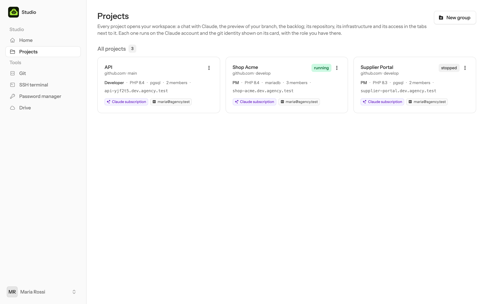
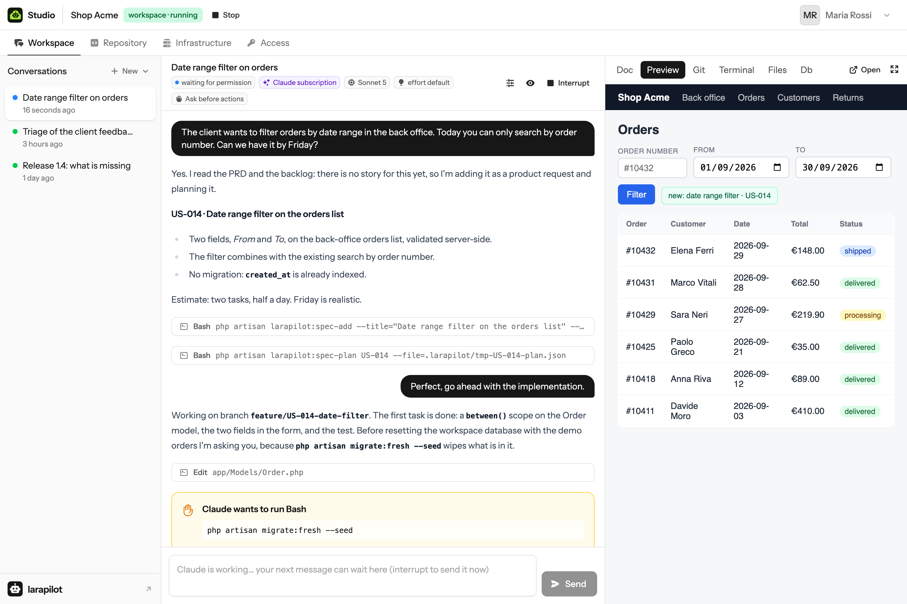
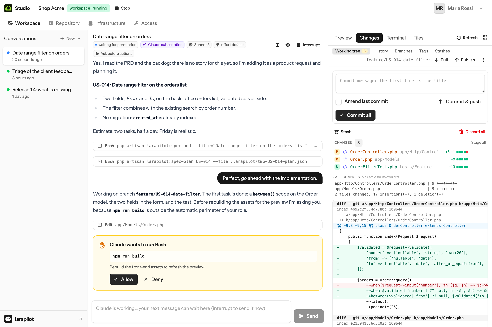
When the story is reviewed and merged on the deploy branch, the git host calls Studio's webhook and the project site at
shop-acme.<domain> pulls, builds and migrates. Its Larapilot dashboard at /larapilot
shows the backlog as it is now, to the people of the project once they are logged in to Studio.
What happened underneath
browser→
Studio→
bridge→
claude -p --output-format stream-json
Studio records the message, marks the conversation as working, and hands the text to the bridge of that workspace together with the address and token to call back. The bridge writes one line on the agent's stdin.
claude→
bridge→
POST /api/bridge/events→
Reverb→
browser
Text, tool calls, results and permission questions come back as small batches. Studio stores them, broadcasts them to the open chat, and polls as a fallback when no websocket is available.
Maria — The client wants to filter orders by date range in the back office. Can we have it by Friday?
Claude — Yes. There is no story for this yet, so I'm adding it as a product request and planning it. US-014 · Date range filter on the orders list. Two tasks, half a day.
Maria — Perfect, go ahead.
Claude — Working on feature/US-014-date-filter. Before rebuilding the assets for the preview I'm asking you: Allow / Deny.
Four roles, one interface
A role decides whether a person can chat on a project and how much Claude may do before asking. An administrator is one everywhere; everyone else has a role per project.
| Role | Can | Permission preset |
|---|---|---|
| Administrator | Everything, on every project, without being a member: the projects and their Settings tab, members and roles, people, service accounts; a workspace on every project; the infrastructure connectors, whose pages no other role sees | acceptEdits |
| PM | On the projects where they are PM: chat, approve; preview, changes and history, terminal and files of their own workspace; the Repository tab; what is shared with the project's PMs | default: Claude asks before commands and edits outside the automatic scope |
| Developer | The same as a PM, with the developer's preset: implement, test, open pull requests; and the project's SSH connections | acceptEdits: edits run, commands still ask |
| Client | Look: the project site as preview, its Larapilot dashboard, and what is shared with the project's clients in its Access and Infrastructure tabs; no chat, no workspace, no repository | — |
A role per project
A person is either an administrator, who sees and runs everything on every project, or a member, whose role is the project's: a developer on one project may be the PM of another and a client on a third. An administrator sets it in the project's Settings → Members & roles, or in the form of a new project. The role on the person (Administration → People, column Access) says only Administrator or Member · <role> by default: the role a new membership starts with. Changing it leaves the roles on each project as they are.
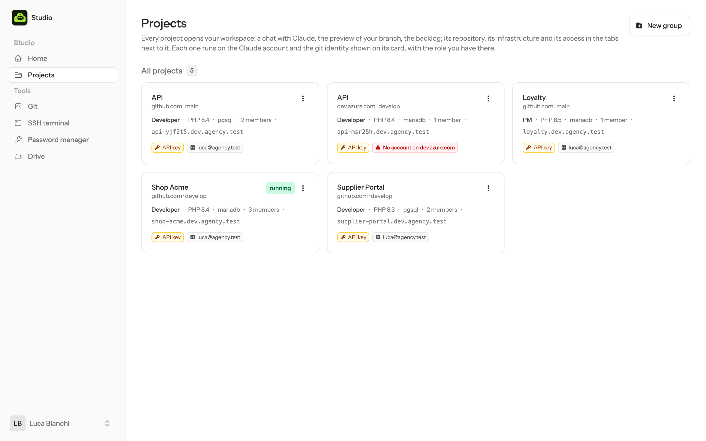
Everything that belongs to a project reads the role on that project:
- the chat and the workspace, for PMs and developers, and the project's Repository tab with them;
- the permission preset a new conversation starts with, and the modes it may switch to;
- the project's MCP servers, given by role;
- passwords, drive folders and SSH connections shared with the project by role;
- the infrastructure attached to the project: who sees it and who acts on it.
The SSH terminal opens to administrators, to developers by default, and to whoever is a developer on at least one project; a project's SSH connections open only to its developers. A change of role counts from the person's next click. Memberships from before roles were per project kept the role their person had.
Presets map to Claude Code's --permission-mode and are set per role in config/studio.php.
A conversation starts with the preset of the person's role on the project; Model &
mode switches it among the modes that role may use (all four for administrators, PMs and developers). Larapilot's skills and the repository's
own are typed as slash commands; see Skills & Claude's questions.
The git hosts
Projects live on GitHub, GitLab, Bitbucket Cloud or Azure DevOps, the same remote forges Larapilot integrates with. All four are always there: a project's repository may live on any of them, and a team on several at once. Every person adds their own accounts in Settings → Accounts → Git, as many as they work with (see Git accounts); administrators add the team's service accounts.
| Provider | Repositories | A new one goes to | The agent's tools | Push webhook |
|---|---|---|---|---|
| GitHub | https://github.com/owner/repo | Your account or an organization | gh, with GH_TOKEN | Repository webhook, HMAC signature |
| GitLab | https://gitlab.com/group/sub/repo, or your own GitLab | Your namespace or a group / subgroup | glab, with GITLAB_TOKEN (and GITLAB_HOST when self-managed) | Project hook on the deploy branch, secret token |
| Bitbucket Cloud | https://bitbucket.org/workspace/repo | A workspace, or one of its projects | Larapilot's REST client, with BITBUCKET_ACCESS_TOKEN; no CLI | Repository webhook on repo:push, HMAC signature |
| Azure DevOps | https://dev.azure.com/org/project/_git/repo | A project of the organization | az repos (Azure CLI + azure-devops), with AZURE_DEVOPS_EXT_PAT | Service hook on git.push, secret header |
The installer asks for the host of the first administrator's token, with the address of a self-managed GitLab or
the Azure DevOps organization, checks the token there (it becomes their first account) and installs that host's
CLI; the CLI of another host is installed the first time a workspace on it needs it. In every workspace the token of the person's
account on the repository's host is in the
environment three ways: for git, through the askpass helper and with the user name the provider expects
(x-access-token, oauth2, x-bitbucket-api-token-auth); for the CLI; and for
Larapilot's integration. A repository Studio creates gets that integration turned on in its first commit
(larapilot:settings-set --gitlab=YES and so on); in an existing repository the team turns it on once and
commits .larapilot/config.yaml.
Service accounts
A project site is cloned, given its push webhook and deployed with one git account. An administrator's own token works, but it goes when they leave. In Administration → Connectors → Git hosting administrators keep the team's own tokens instead: a bot user, a project or group access token. Service accounts create repositories, register the webhooks and deploy the sites, whoever the administrator is. They are offered first in the new-project form and in the project's Settings → General → Deployed with. Nobody commits with them: people work with their own accounts. A service account that deploys projects cannot be removed until those projects use another one. Its token needs the administrators' scopes below.
GitHub
Organizations. A new repository goes to your account or to an organization you belong to; the form lists the organizations your token can see, and creating a repository there needs the right to do so in that organization. Organizations that restrict fine-grained tokens approve them in Organization settings → Personal access tokens. With SAML single sign-on, a classic token must be authorized for the organization (Configure SSO next to the token).
- Where. GitHub → Settings → Developer settings → Personal access tokens → Fine-grained tokens → Generate new token.
- Resource owner. The organization that owns the projects, or your account. A fine-grained token
reaches one owner: when projects live in several organizations, use a classic token with
repo,read:organdadmin:repo_hook. - Repository access. The repositories of the projects, or all of them; administrators who create repositories need all of them.
- Permissions, everyone. Contents read and write, Pull requests read and write, Metadata read.
- Permissions, administrators. Also Administration read and write (new repositories) and Webhooks read and write (the deploy webhook).
GitLab
Groups. A new repository goes to your personal namespace or to a group or subgroup where you are at
least Developer and the group lets that role create projects; the form lists those groups by their full path. A
self-managed GitLab is the address given with the account (https://git.example.com; the installer's
STUDIO_GIT_URL for the first administrator's), and the agent's glab gets it as
GITLAB_HOST. Registering the deploy webhook needs the Maintainer role
on the repository.
- Where. On your GitLab: avatar → Edit profile → Access tokens → Add new token.
- Scope.
api: clone and push, merge requests throughglaband Larapilot, and for administrators the new repositories and the webhook.read_repositoryandwrite_repositoryalone let git work, not merge requests. - Expiration. GitLab asks for a date. Replace the token in Studio before it expires.
- Copy it into Settings → Accounts → Git → Add an account → GitLab. It starts with
glpat-.
Bitbucket Cloud
Workspaces and projects. A Bitbucket repository belongs to a workspace and to one of its projects. The form lists the workspaces you belong to and their projects: a workspace alone puts the repository in its oldest project, a project puts it there. Creating repositories needs a workspace role that allows it; registering the webhook needs admin rights on the repository.
- Where. id.atlassian.com → Account settings → Security → Create and manage API tokens →
Create API token with scopes → Bitbucket. API tokens replace app passwords: git signs in with the token as
x-bitbucket-api-token-auth, the REST API with the token as a bearer. - Scopes, everyone.
read:user,read:workspace,read:repository,write:repository,read:pullrequest,write:pullrequest(each ends in:bitbucket). - Scopes, administrators. Also
read:project,admin:repository(new repositories),read:webhook,write:webhookanddelete:webhook(the deploy webhook). - Expiration. Up to a year. Replace the token in Studio before it expires.
Azure DevOps
Organization and projects. An Azure DevOps account belongs to one organization, given with the
account (https://dev.azure.com/acme; acme.visualstudio.com addresses work too; the
installer's STUDIO_GIT_URL for the first administrator's). Another organization is another account.
Repositories live in the organization's projects: the form lists them, and a new repository follows the visibility
of its project. A project's address must be in the organization of the account that creates or deploys it. Creating repositories needs the Create
repository permission on the project; registering the push service hook needs Project Administrator.
- Where.
https://dev.azure.com/<organization>→ User settings → Personal access tokens → New Token. - Organization. This Studio's, or all accessible organizations.
- Scopes, everyone. Custom defined → Code → Read & write.
- Scopes, administrators. Code → Read, write & manage, and Project and Team → Read.
- Expiration. At most a year, or less when the organization's policy says so.
The login on Azure DevOps is the account's e-mail address; the handle is its first part
(maria.rossi@acme.com → maria-rossi).
A project
New project in Administration → Projects. Saving it gives the project its key, clones the
repository, creates its database, serves it at <key>.<domain> and registers the push
webhook on the git host that redeploys it on every push. Everything else about it is on its own
Settings tab.
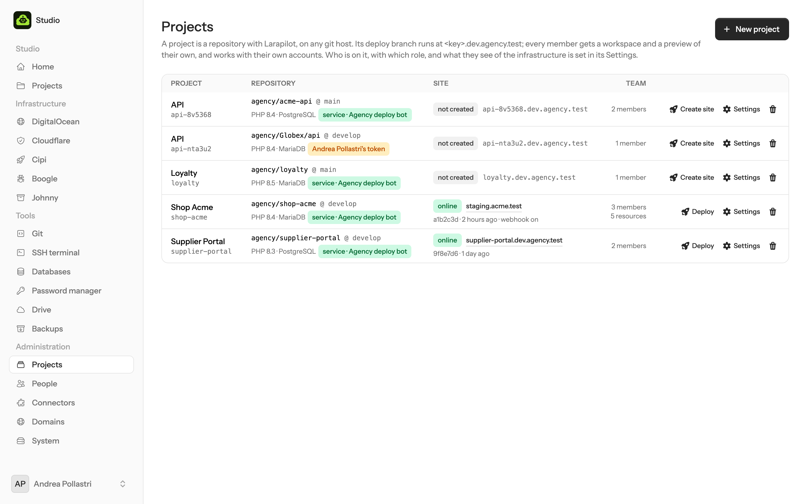
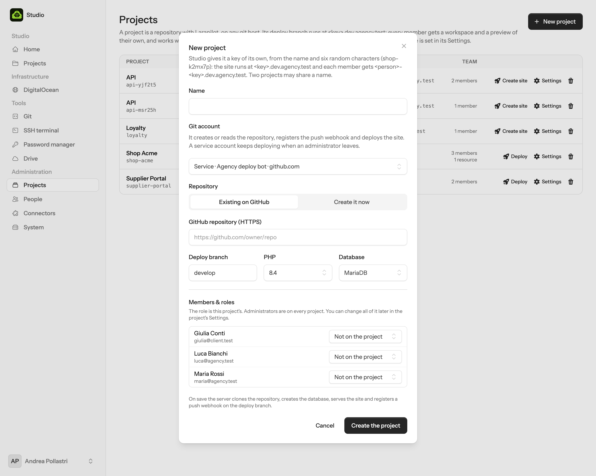
| Field | Used for |
|---|---|
| Name | What people read. Free text: two projects may share it, such as an "API" for two clients. |
| Key | Not a field: Studio makes it from the name, cut short, a dash and six random characters without 0, o, 1, l or i (api-9usaf9). It names the site (api-9usaf9.<domain>), the previews (maria-api-9usaf9.<domain>), the Linux user, the databases and the folders, and never changes. Projects from before 2.0 keep the key they had. |
| Git account | The account that creates or reads the repository, registers the push webhook and deploys the site, on any host: a service account of the team, offered first, or one of yours. |
| Repository | An existing one, or Create it now (below). The HTTPS address of a repository on the host of the chosen account: https://github.com/owner/repo, https://gitlab.com/group/repo (or your GitLab), https://bitbucket.org/workspace/repo, https://dev.azure.com/org/project/_git/repo. Cloned with that account for the site, with each member's own account on that host for their workspace. |
| Deploy branch | What the site runs and what workspaces start from. A push to it deploys the site. |
| PHP, Database | A PHP version installed on the server (8.3, 8.4 or 8.5 today) and MariaDB or PostgreSQL, for the site and for every workspace of the project. |
| Members & roles | For each person, Not on the project or their role on it: PM, developer or client. Administrators see every project without being members. |
The rest is on the project's own Settings tab, for administrators (p/<key>/settings;
Settings in the list leads there). Name, repository, the account it is deployed with, branch and stack,
members and roles, server, access, agent and MCP servers are changed there; see
Project settings.
Or let Studio create the repository
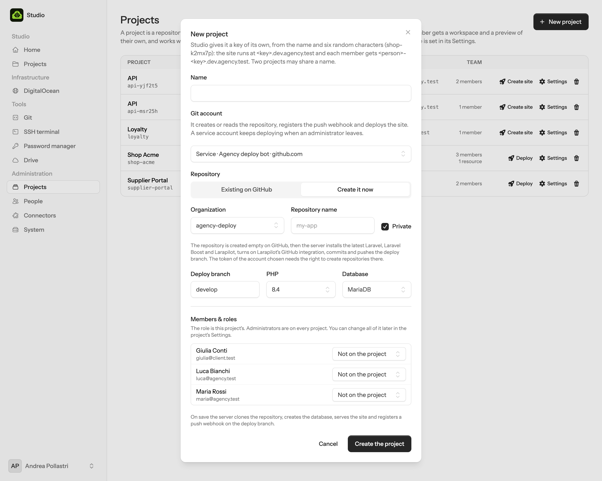
Where a new repository can go depends on the host: the account or one of its organizations on GitHub, its
namespace or a group on GitLab, a workspace or one of its projects on Bitbucket, a project of the organization on
Azure DevOps. The chosen account's token needs the right to create repositories there; the scopes are in
The git hosts. What lands in the new repository: composer create-project
laravel/laravel at its current release; laravel/boost and andreapollastri/larapilot
as dev dependencies, with larapilot:install and boost:install run (Boost is always there:
if its install fails, the project stops with the reason instead of going on without it); Larapilot's integration for
the host turned on in .larapilot/config.yaml; and one commit on the deploy branch (plus
main when the deploy branch is another name).
What an existing repository must have
- Larapilot installed and
larapilot:installrun, so the skills, the.larapilot/workspace, the dashboard and the API exist; Larapilot brings Laravel Boost with it, andboost:installgives the agent Boost's guidelines and MCP server. Without Larapilot the site still deploys, but there is no dashboard and the chat has no skills to call. - A
.env.example. The server copies it and sets the application URL, the database, redis and the Larapilot API token; everything else you put there is kept. - Optionally a
.mcp.jsonat the root for MCP servers every workspace should have, with secrets as${ENV}references, and custom skills under.larapilot/skills/.
People
Accounts are created by an administrator and used with a password. No public sign-up, no single sign-on.
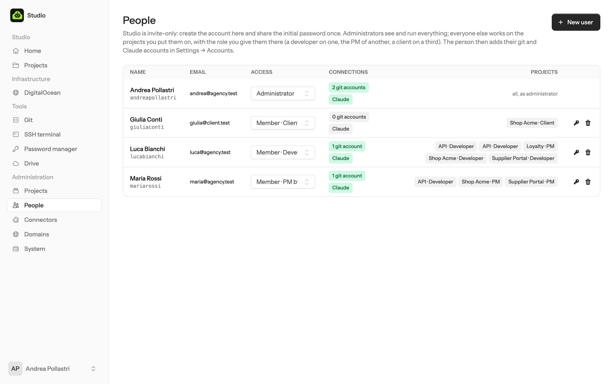
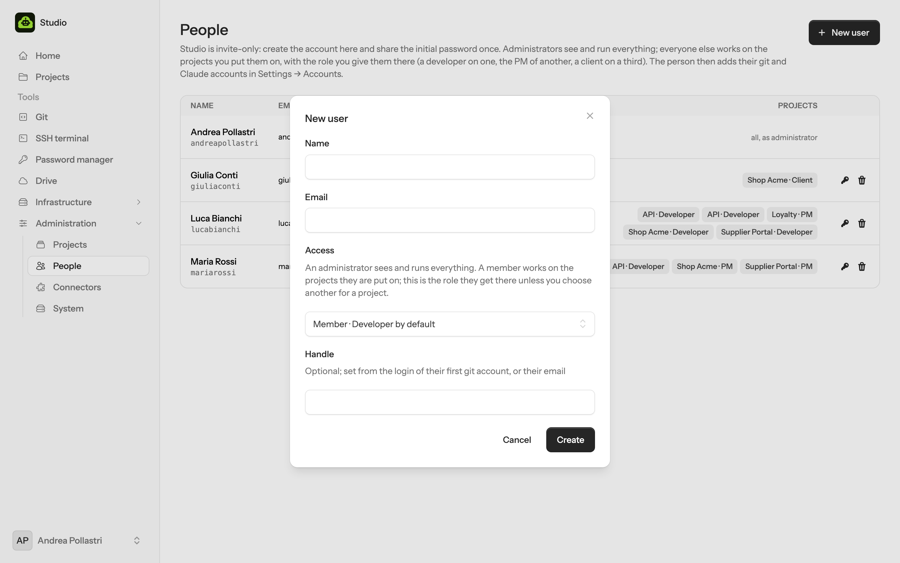
- Create the account. Name, email, access: Administrator, or Member with the role their memberships start with (see Roles). Studio shows a one-time initial password; share it once, it is never shown again.
- They sign in with email and password, change it, and turn on two-factor in Settings → Security: an authenticator app or a passkey.
- They add their accounts: git and Claude in Settings → Accounts (My accounts in the user menu). Until there is an account on the host of a project's repository and a Claude account, the project opens on a page that says so instead of a chat. Their Home lists what is missing.
- They get on projects. An administrator puts them on a project, with their role there, in the project's Settings → Members & roles or when creating it. Studio shows the projects they are on; the first open builds the workspace.
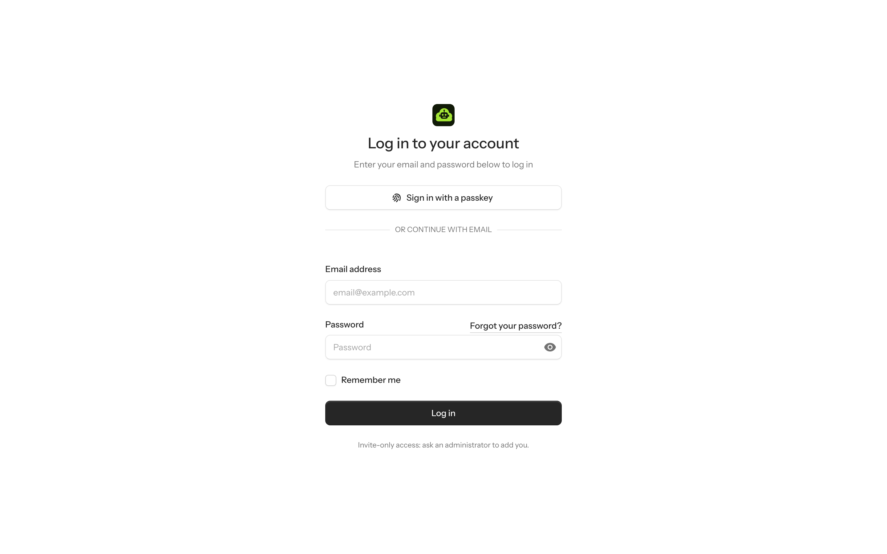
Your accounts
Each person brings their own accounts, as many as they work with, stored encrypted and handed only to their own
workspaces. Settings → Accounts (My accounts in the user menu; the old address
settings/connections redirects there) has three tabs: Claude, Git and SSH
keys. Groups of projects say which accounts each project uses.
Claude accounts
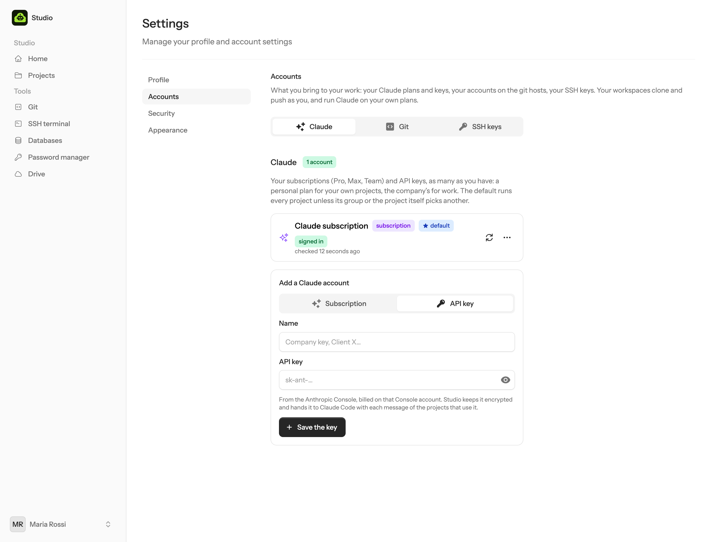
Subscriptions and API keys, side by side; one is your default. For a Claude Pro, Max or Team plan,
Add a Claude account → Subscription opens a terminal with Claude Code's own claude auth login,
running as you in your home on the server, in a folder of its own for that account (~/.claude for the
first, ~/.claude-<name> for the others; they share your sessions, agents and skills). Open
Anthropic's sign-in page, approve with the Claude account of that plan, paste the code back: Studio never sees or
keeps the login. Anthropic does not let a platform collect or forward claude.ai credentials, which is why Studio
takes no setup-token; signing in to the unmodified Claude Code where a platform hosts it is what its
terms allow. With an Anthropic Console account, add the API key: Studio keeps it encrypted and sends it with each
message of the projects that use it. The login folders and the kept keys are denied to the agent itself.
The account goes with every message: changing it needs no restart, and a conversation resumes where it was on the new account. The status bar of the chat says which account the next message runs on and why; a subscription shows its plan's usage, kept per account.
Git accounts
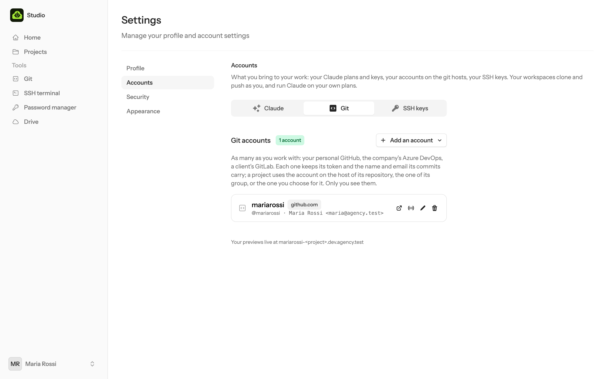
Add an account: the host (GitHub, GitLab, Bitbucket Cloud or Azure DevOps), a name and the token, with
the scopes in The git hosts (and the address of a self-managed GitLab or of the Azure
DevOps organization). Checked, edited and removed there too; Tools → Git opens them all in one
dashboard. Add as many as you work with: a personal GitHub, the company's Azure DevOps
organization, a client's self-managed GitLab, another GitHub for work. Each one keeps its token and the
identity its commits carry: the name and email the provider gives (or the address it accepts for
commits), which you can change, so the company account commits as you@company.com and the personal one
with your own address. Studio verifies the token and reads the login; the first account's login also gives your
handle, once: your previews are <handle>-<key>.<domain> and your Linux user on the
server is ws-<handle>, whatever accounts come and go.
A workspace works with your account on the host of the project's repository: the one chosen for the
project, else the one of its group, else your account on that host. Git pushes and the host's CLI opens pull
requests as that account, and the clone's git config user.name / user.email is its identity. The CLI of
a host is installed on the server the first time a workspace needs it. The token never sits in a file git can read:
an askpass helper hands it to git from the environment, with the user name the host expects.
SSH keys
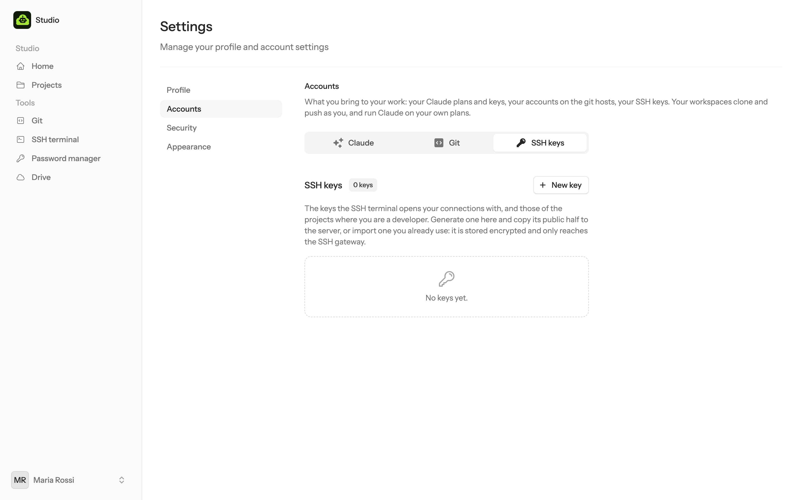
The keys the SSH terminal opens your connections with, and those of the projects where you are a developer. New key generates an Ed25519 or RSA key, or imports one you already use; the public half is there to copy to the server. Removing a key asks first, and says how many connections use it. Keys are stored encrypted and reach only the SSH gateway.
Groups of projects
On Projects, New group: Personal, Open source, Work, Clients… Each person's groups are their own, in the order they give them; a project moves in with Move to group in its menu. A group picks the Claude account its projects run on and the git account they push with; a git account applies only to the projects whose repository lives on its host, the others keep the account on theirs. A project may pick its own accounts (Accounts for this project), only for you: the other members work on it with theirs. Every card shows what the project runs on, and why (chosen for the project, from the group, your default, your account on that host).
The project site
<key>.<domain> is the deploy branch, running on the same server. It is the project's
staging, its dashboard and the source of every workspace's data.
- Creation. When the project is saved, the helper creates a Linux user, clones the deploy branch
with the account that deploys it (a service account or an administrator's token), creates the database, writes the
.envwithAPP_ENV=stagingand a freshLARAPILOT_API_TOKEN, runs Composer (dev dependencies included: the site is a staging environment, and Larapilot and Boost are dev dependencies whose dashboard and API it serves), npm, migrations, a PHP-FPM pool, a Caddy host and a queue worker. Studio registers a push webhook on the repository. - Every push to the deploy branch reaches
/api/git/webhook/<key>with the project's secret: an HMAC signature from GitHub and Bitbucket, the secret token in a header from GitLab and Azure DevOps. Studio queues a deploy: fetch, reset to the branch, build, migrate, restart the worker. Deploy in Administration → Projects does the same by hand. - The Larapilot dashboard is
/larapiloton that host, behind the Studio login like every other address of the project. The PM's bookmark. - New workspaces copy the site's database (a dump and a restore, MariaDB or PostgreSQL), so a person starts from realistic data. Without a site database, migrations run instead.
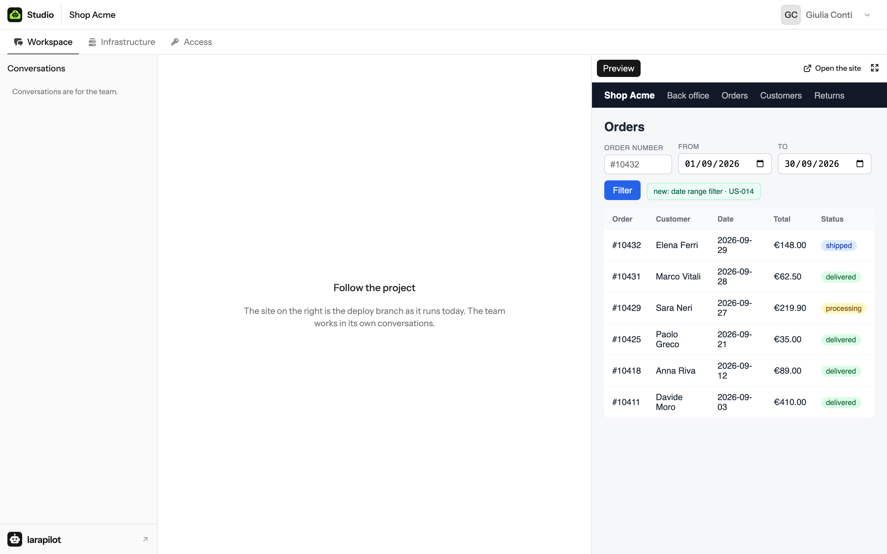
Deploys are a reset to the branch and a rebuild in place, not atomic releases: a failed migration leaves the site on the previous code, a failed build may leave it mid-way for a moment. It is a staging site, kept simple on purpose. For production use the pipeline your project already has.
Project settings
What the project is, who works on it and as what, what the server runs for it, who may open its hosts, what
the agent gets and which MCP servers its chats get. The Settings tab of a project, for administrators
(p/<key>/settings; Settings in Administration → Projects leads there), has
six sections: General, Members & roles, Server, Who opens the hosts,
Agent and MCP servers. Each saves on its own. Server, Who opens the hosts and
Agent are applied to the site and to every workspace preview; MCP servers are saved one by one (see
MCP servers).
General
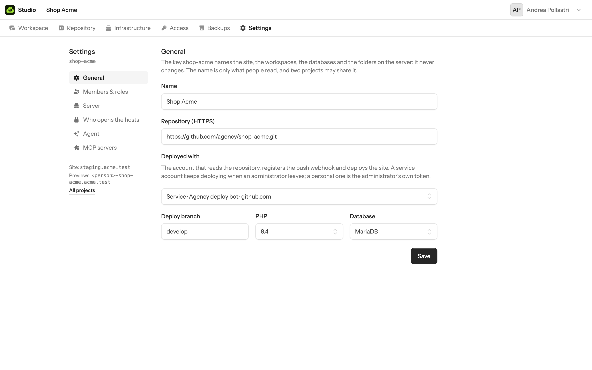
The name, the repository's address, the account it is Deployed with (a service account, or an administrator's own token on the repository's host), the deploy branch, PHP and the database. The address must be on the host of the deploying account. The key is shown, not edited: it never changes.
Members & roles
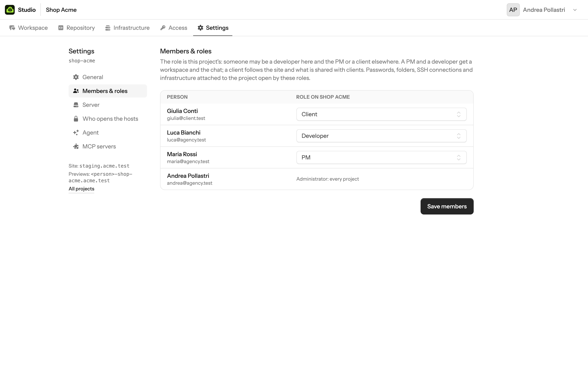
Every person who is not an administrator, with Not on the project or their role on it: PM, developer or client. Administrators are listed as on every project. A role counts from the person's next click; what it opens is in Roles. Administration → People lists each person's projects with their role, and a click there opens this section.
Server
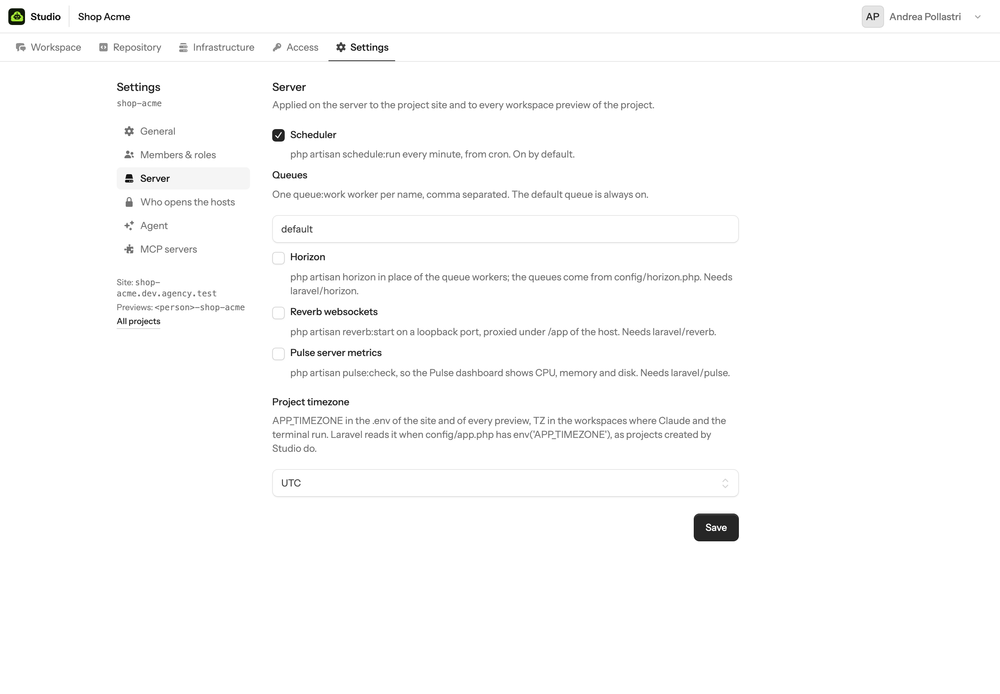
- Scheduler
- A cron line runs
php artisan schedule:runevery minute as the host's own Linux user. On by default, for the site and for every preview.
- Queues
- One
queue:workworker per queue name, as a systemd unit that restarts on failure and on every deploy.defaultis on from the start; addmail, exportsand two more workers appear.
- Horizon
php artisan horizonin place of the plain workers: Horizon reads the queues fromconfig/horizon.phpand supervises them itself. The app must havelaravel/horizon.
- Reverb
- Runs
php artisan reverb:starton a loopback port of its own and proxies/appand/appsof the host to it. The helper writes theREVERB_*keys into the app's.envonce; the app itself must havelaravel/reverbinstalled.
- Pulse
php artisan pulse:check, so the Pulse dashboard of the app shows the server's CPU, memory and disk. The app must havelaravel/pulse.
- Timezone
- One per project, UTC by default:
APP_TIMEZONEin the.envof the site and of every preview (the cached configuration is rebuilt), andTZin the workspaces, so Claude and the terminal see the same clock from the next start of each workspace. Laravel reads it whenconfig/app.phphas'timezone' => env('APP_TIMEZONE', 'UTC'): projects Studio creates have it, an existing repository needs that line.
- HTTPS
- Nothing to switch on: Caddy issues a certificate for every host the first time it is opened, the deploy site and each workspace preview alike (see The server).
Who opens the hosts
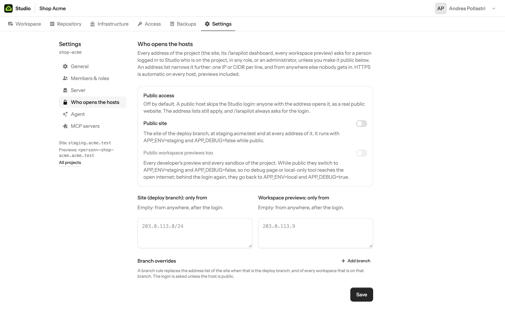
Every address of a project is behind the Studio login: the site, its /larapilot dashboard and API,
each workspace preview, any path. The visitor must be logged in to Studio and assigned to the project, in any
role (developer, PM, client), or be an administrator; anyone else is sent to the Studio login page and comes back
after it, and a logged-in person who is not on the project gets a 403. There is no public mode: a preview runs
with APP_DEBUG on, a site with work not yet released, and neither is for the open internet.
- Only from
- An address list for the site, one for the previews: one IP or CIDR per line. It narrows the login, it never replaces it: from a listed address the visitor still logs in, from any other nobody gets in. Empty means from anywhere, after the login.
- Branch overrides
- A list for
feature/secretreplaces the site's list while that is the deploy branch, and the previews' list for every workspace that is on that branch. Studio remembers each workspace's branch from its Changes tab.
How it works: the Caddyfile puts a forward_auth to Studio's /api/site-auth in front of
every host that is not Studio's own, so no project host is ever served without it, whatever its own file says.
Studio answers 204 (go on), a redirect to its login, or 403. Machines are no exception: a webhook or an
end-to-end test aimed at a project host gets the login page too.
Studio's own session cookie never reaches a project host: the apps there run code the team writes, and
must not see a cookie that opens Studio. A visitor without a pass is sent to studio.<domain>,
logs in there if needed, and comes back with a one-time token valid for two minutes. The gatekeeper swaps it
for a pass cookie bound to that host alone, good for twelve hours; it is useless on any other host and in
Studio.
Agent
What the agent gets in this project. Both switches are on by default.
- Browser for the agent
- Every chat gets a headless Chromium signed in to the preview as the person, through the same access rules. See The agent's browser.
- Conversations in a sandbox
- A conversation may work in a git worktree of the person's workspace, with its own branch, database and preview. Sandboxes per person caps how many each person keeps at once (3 by default, up to 10): each is a database, a build and a few hundred MB on disk. See Sandboxes.
MCP servers
Give the chats of a project more tools: the project's documentation, error tracking, a CRM, an internal API. Any remote MCP server works; Studio does not care whose it is.
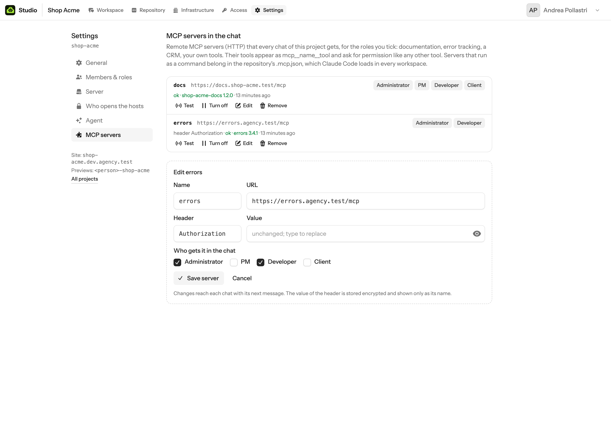
- Add one
- Settings → MCP servers on the project: a name (it becomes part of the tool names,
mcp__docs__search), the URL of the server, and usually one header such asAuthorization: Bearer …. The value is stored encrypted and never shown again; editing without typing a new value keeps it.
- Who gets it
- Tick the roles, as people have them on this project. A PM can have the documentation server while only administrators and developers get the one that reads production errors. Clients get nothing unless you tick them.
- Test
- Studio makes the
initializecall Claude Code would make, with the header, and keeps the answer:okwith the server's name and version, a refused header, a wrong URL.
- In the chat
- Each person's chat gets the enabled servers their role on the project may use, from the next message on; Model & mode lists them. Their tools ask for permission like any other tool, unless the mode lets them through. Turn off takes a server out of every chat without forgetting it.
Remote here, commands in the repository
Studio only adds remote servers (the streamable HTTP transport). A server that runs as a command belongs in
the repository's .mcp.json: Claude Code loads it in every workspace, as the person's own Linux
user, with secrets as ${ENV} references. Both kinds end up in the same chat.
The bridge hands Studio's servers to Claude Code through a file only the workspace user can read, never on the
command line, so a token does not show in the server's process list. It accepts nothing but
{"type": "http", "url"} entries from Studio.
Studio sends little email: the Forgot your password? link, and that is about it. The installer does not ask for a mail account, so a fresh server writes its messages to a log file instead of sending them, and the pages say so. Ten minutes with any provider's SMTP credentials turn it on.
What works without it
Accounts are created by an administrator, who hands over the first password in person; a person who forgets
theirs asks an administrator, who gives them a new one from Administration → People (the key icon: the
old sessions close, 2FA is removed, the new password shows once). Until email is set up, the Forgot your
password? page explains exactly that instead of promising a link. Whoever holds root has
studio-recover admin for the administrators themselves.
Turning it on
Studio's settings live in one file, /opt/studio/shared/.env, shared by every release so an update
never touches it. It is owned by the studio user and readable by nobody else; root edits it over
SSH. Studio does not read the file on each request but a cache built from it, so a change is live only after a
reload, and studio-recover does both in one go:
-
studio-recover env # opens the .env in $EDITOR (nano), reloads on save -
studio-recover reload # after editing the file with anything else
The file already carries the block to fill in. Set MAIL_MAILER to smtp, uncomment the
host, port, scheme and credentials, and keep a sender address at your domain (most providers want the domain
verified on their side first):
MAIL_MAILER=smtp
MAIL_FROM_ADDRESS=studio@agency.test
MAIL_FROM_NAME="Studio"
MAIL_HOST=smtp.resend.com
MAIL_PORT=587
MAIL_SCHEME=smtp
MAIL_USERNAME=resend
MAIL_PASSWORD=re_xxxxxxxxxxxxxxxxxxxxxxxxMAIL_SCHEME is smtp for a STARTTLS port (587, 2525) and smtps for an
implicit-TLS port (465). Where to find the values with the usual providers:
| Provider | Host · port | Username | Password |
|---|---|---|---|
| Resend | smtp.resend.com · 587 or 465 | resend | an API key |
| Postmark | smtp.postmarkapp.com · 587 | the server token | the same server token |
| SendGrid | smtp.sendgrid.net · 587 | apikey | an API key |
| Mailgun | smtp.mailgun.org · 587 (smtp.eu.mailgun.org in the EU) | postmaster@<your domain> | the SMTP password of that domain |
| Amazon SES | email-smtp.<region>.amazonaws.com · 587 | SMTP credentials made in the SES console (not the IAM access key itself) | |
| Brevo | smtp-relay.brevo.com · 587 | the account login | an SMTP key |
| Google Workspace | smtp.gmail.com · 587 | the mailbox | an app password (2-step verification on) |
| Your own server | its host · 587 or 465 | a mailbox allowed to relay | |
Studio ships with the SMTP transport alone: a provider's HTTP API (Resend's, Postmark's, SES's) needs a package
the release does not carry, and every one of them offers SMTP, so there is nothing to install. Any other line of
the file is Studio's own business; the ones you may want are the MAIL_* block and, for a different
interface language, APP_LOCALE (en or it).
Checking it
Log out, open Forgot your password?: once email is configured the form is there. Send yourself a link;
it should arrive within a minute. If it does not, the reason is in /opt/studio/shared/storage/logs/
(the newest laravel-*.log): a refused login, a blocked port, a sender the provider does not know.
Fix the line, studio-recover reload, try again. To go back to not sending, MAIL_MAILER=log
and a reload.
Updates
Studio keeps itself up to date. studio-update, run by root, installs every new build of its channel
together with what it needs on the server: a new PHP, a newer Node, a package, a git host's CLI, a changed
service. The stable channel follows the release tags; beta testers follow the main branch.
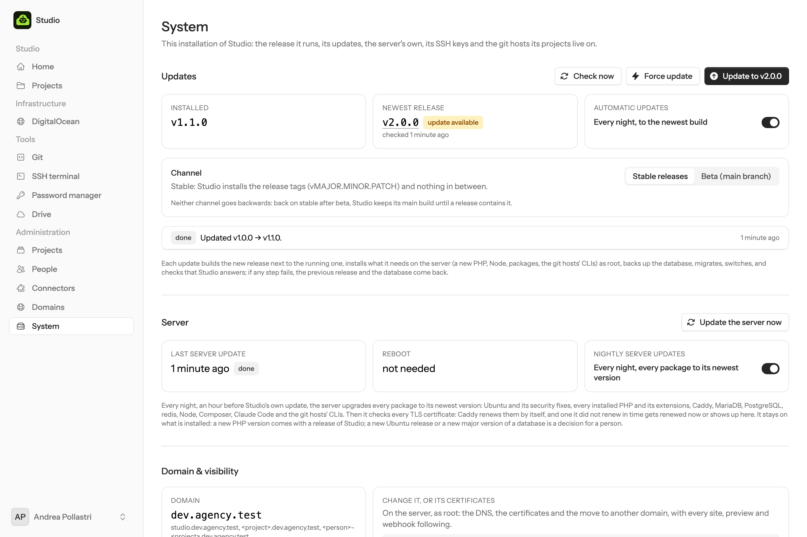
Channels
| Channel | Installs | For |
|---|---|---|
| Stable (default) | The newest release tag, vMAJOR.MINOR.PATCH; pre-releases and everything between two releases are skipped | Every team |
| Beta (beta tester mode) | The head of the main branch, every new commit, before it becomes a release | A server you test Studio on, not the team's daily work |
The channel is a switch in Administration → System; the installer can start on beta
(STUDIO_CHANNEL=beta, see What it installs). Neither channel goes
backwards: a build is installed only when it contains the installed commit, which the updater checks on a blob-less
mirror of the repository. Back on stable after beta, Studio keeps its main build, newer than the last release, until a
release contains it; when a release is tagged on that very commit, it moves to the release's name.
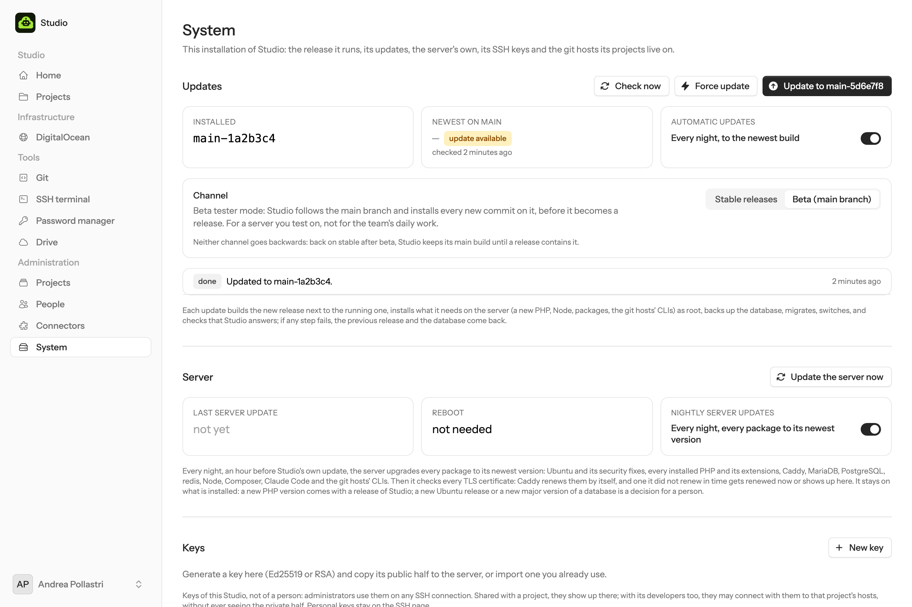
main instead of the newest release,
each one installed as main-<commit> with the same backups and rollback as a release.When
- Every night, between 04:00 and 05:00, from a systemd timer, while automatic updates are on (the default).
- From Administration → System: Check now, then Update to ….
- Force update, in the same place: builds the newest build of the channel and installs it now,
even when it is the one already installed (a broken build, a failed system step, a server changed by hand). The new
build goes next to the live one as
<build>@<time>, with the same dump and rollback. It never goes back to an older build: that is whatstudio-update rollbackis for. - On the server:
sudo studio-update apply(--forcefor the same as the button). Running the installer again does the same asapply.
What an update does
- Clone the build into
/opt/studio/releases/<build>. A tag'sVERSIONfile must say the same as the tag. With/etc/studio/update-signersin place, the tag (or, on beta, the commit) must carry a valid SSH signature by one of those keys. - System step, as root, from the new build: its
installer/requirements.envnames the PHP versions, the PHP that runs Studio and the Node major;installer/lib/system.shinstalls what is missing, refreshes Composer and Claude Code, installs Playwright MCP at the pinned version with its Chromium, and the CLI of the first administrator's git host. Nothing is removed. - Upgrade scripts, phase before:
installer/upgrades/<version>.shof every version after the installed one up to the new one, in order, as root, for what a release needs beyond packages. On beta, where several builds share a version, a script that changed since it ran runs again. - Build next to the running release, on the shared
.envandstorage: Composer without dev dependencies, the assets. - Database: a dump to
/var/backups/studio/, maintenance mode, migrations with the new code. Caddy's certificate question, the access check of protected hosts and the bridges' callbacks keep answering meanwhile. - Switch: the new build's helper, templates, services, PHP-FPM pool and Caddyfile, then
/opt/studio/currentpoints at it; upgrade scripts, phase after; caches, restarts, maintenance off. - Health check: Studio must answer
/up. If it does not, or any step from the dump on fails, the previous release, its root files and the database dump come back, and the System page shows the log.
Project sites and workspaces are not touched: they are your projects. Bridges move to the new code when they restart (a workspace stopped and started, a changed token); a release that changes the bridge protocol restarts them in its upgrade script. Three releases and five database dumps stay on disk.
The server itself
Studio's update installs what a release needs and adds what is missing; it does not upgrade what is already there.
That is the job of the server update, studio-update system: every night between 03:00
and 03:30 (an hour before Studio's own update, which waits for it), from Administration → System with
Update the server now, or by hand. It brings every package and tool on the server to its newest version:
- apt:
update,full-upgrade,autoremove. That is Ubuntu and its security fixes, every installed PHP and its extensions (ppa:ondrej/php), Caddy, MariaDB, PostgreSQL, redis, Node within its major (NodeSource),ghoraz. Configuration files changed by hand are kept. - Outside apt: Composer (
self-update), Claude Code (npm,@latest),glab(its newest release), theazure-devopsextension, through the system step of the installed release, which also installs what that release names and is missing. - Services:
needrestartrestarts every service still on an old library (never a workspace bridge, where a conversation may be running: it picks the new Node up at its next start); when anything changed, Studio's services restart; then Studio must answer/up. - TLS certificates: Caddy issues each one on demand and renews it by itself when a third of its
lifetime is left. The check goes through every certificate Caddy keeps for a host Studio still serves: one past
that point gets a TLS handshake on the server, which makes Caddy renew it now; one still not renewed (a DNS
record moved, the CA unreachable) is listed on the System page with its days left, until it is. The
certificates of deleted projects and workspaces are left to expire.
studio-update certificatesruns the check alone. - Reboot: a new kernel shows reboot required on the System page. With
SYSTEM_REBOOT=1in/etc/studio/studio.envthe nightly run reboots the server five minutes after it ends; a run by hand never does.
It stays on what is installed: a new PHP version comes with a release of Studio (requirements.env); a
new Ubuntu release, a new Node major or a new major version of MariaDB or PostgreSQL is a decision for a person. The
System page lists what the last run changed (php8.4-fpm 8.4.12-1 → 8.4.13-1) with its log; apt's own
output is in /var/log/studio-install.log. The switch Nightly server updates (or
studio-update system-auto off) turns the timer off.
-
studio-update check # what the channel would install, and why not -
studio-update apply # --force · --to v2.0.0 -
studio-update channel beta # or stable · auto on|off -
studio-update rollback # the previous release and its database -
studio-update ensure # the system step again · status -
studio-update system # every package to its newest version, the certificates · system-auto on|off · certificates
Domain & visibility
Every host hangs under the one domain chosen at install: studio.<domain>,
<project>.<domain>, <person>-<project>.<domain>, with a wildcard
DNS record and certificates Caddy issues on demand and renews by itself. When the domain itself has to change,
or a certificate needs a hand, root has studio-domain:
-
studio-domain status # domain, DNS, visibility, every certificate -
studio-domain check studio.agency.test # does *.domain point here? -
studio-domain change studio.agency.test # move everything there -
studio-domain renew [host|all] # the late ones · a new one for a host · for all -
studio-domain prune # certificates of hosts no longer served
Changing the domain: create *.<new> A <this server> first; change
checks it and refuses to go on until it resolves here (--skip-dns goes on anyway). It backs up every
file it touches in /var/backups/studio-domain, puts Studio in maintenance for a minute, moves every
site, preview and sandbox (<name>.<old> becomes <name>.<new> in its Caddy
host and in the APP_URL, ASSET_URL, REVERB_HOST and session lines of its
.env), Studio's own .env and Caddyfile, the hosts kept in the database, and registers every
push webhook again at the new address. If a step fails, everything is put back on the old domain. Afterwards
everyone signs in again, and passkeys, which belong to the old host, are added again in Settings → Security
(passwords and 2FA codes keep working). An app with Reverb on keeps the old host in its built assets until its
next build; the command lists them. Once nobody uses the old names, prune removes their certificates.
Certificates: renew alone does what the nightly check does (renews the late ones);
renew <host> throws that host's certificate away and gets a new one, renew all every host's.
Caddy restarts for it, so open terminals reconnect. Let's Encrypt allows 50 new certificates a week per registered
domain and 5 for the same host: renewing everything is for when something is really wrong.
Hiding the dashboard: Administration → System → Domain & visibility switches
studio.<domain> from public (its sign-in page to anyone, as any app) to hidden. Hidden, whoever is not
signed in gets the page of an address nobody configured, on every path, and the welcome page of unknown names no
longer links to Studio. People get in through the door: a secret link shown on that page and next to a new
account's password, opened once per browser (it leaves a cookie for a year). A signed-in session is enough, and so
is a good password reset link from an email. New link closes every door handed out until then. From the
server, studio-recover door prints the link (--rotate makes a new one) and
studio-recover public / hidden switch it. Project sites and previews keep their own rules
(Who opens the hosts); a hidden dashboard only hides Studio itself.
Locked out
A forgotten password or a lost 2FA device is an administrator's job: the key icon in Administration → People gives the person a new password, shown once, and removes their 2FA (with email set up, people also get the usual Forgot your password? link). Administrators do the same for each other. What is left is the last administrator: nobody above them in Studio, and the server itself fine. The one key that is never in Studio is root on the server. From an SSH session:
-
studio-recover admin # the main administrator: the oldest admin account -
studio-recover admin you@agency.test # that account instead; unknown = created
The account gets a new password, printed once in the terminal; its 2FA is removed, every session it had is closed,
it is an administrator again with a verified email. Its git and Claude credentials stay, and nothing else on the
server is touched. Log in with that password, change it in Settings, set 2FA up again. Each run is written
to syslog (auth) and to Studio's log.
studio-recover lives in /usr/local/sbin, mode 0700: only root can read or run it, there is
no sudo rule for it and nothing in Studio calls it. It runs php artisan studio:reset-admin as the
studio user, which is the same thing if you prefer artisan. Whoever can reset the administrator can
already read /opt/studio/shared/.env: the script adds no power root does not have, it only makes the
way back short and recorded.
Releasing
For whoever maintains Studio: set VERSION (2.0.0 today), add the release to CHANGELOG.md
with what an upgrade from the previous one needs, commit, and push the matching tag (v2.0.0) on a
commit that passed the tests. Every stable server installs it at its next run; beta servers already run that commit.
The release workflow refuses a tag whose VERSION says otherwise, and so does the updater. To sign
releases, tag with git tag -s and an SSH key (gpg.format=ssh), sign the commits of main
too if beta servers check signatures, and put the allowed signers, in ssh-keygen's allowed-signers
format, in /etc/studio/update-signers on each server. What a release needs on the server goes in
installer/requirements.env, or in an upgrade script (installer/upgrades/README.md).
Home & the menu
Studio opens on Home: what waits for you now, across every project and every git account.
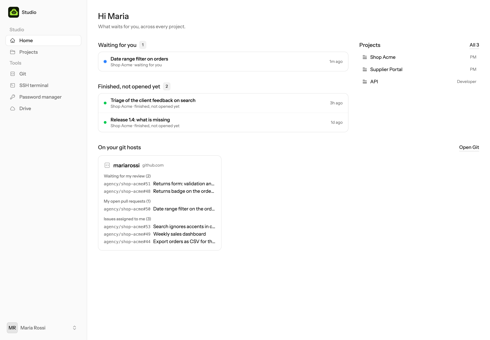
- Waiting for you
- Your conversations that ask a question or a permission, or failed. Below them, those finished since you last opened them, and those working now. A click opens the conversation.
- Needs attention
- Your workspaces that failed, and the sites of your projects that failed.
- Projects
- Yours, the ones you worked on last first, each with its group and your role there.
- On your git hosts
- A card per git account, read after the page is drawn so a slow host never holds it: pull requests asking for your review, your open ones, issues assigned to you. Open Git goes to Tools → Git.
A new person sees Get started instead: add a git account, connect Claude, get on a project. An administrator creates the first project; everyone else is put on theirs.
The menu
| Group | Entries | Who |
|---|---|---|
| Studio | Home, Projects | Everyone |
| Infrastructure | The connectors that are on | Administrators |
| Tools | Git, SSH terminal, Password manager, Drive | Everyone; the SSH terminal as its section says |
| Administration | Projects, People, Connectors, System | Administrators |
The user menu has My accounts (Settings → Accounts), Settings (profile, appearance, security) and Log out.
The project's tabs
A project opens on its workspace; the tabs on the row under its header lead to the rest of it. A tab shows only to who has something there.
| Tab | What is there | Who |
|---|---|---|
| Workspace | The conversations, the chat and the right pane: preview, changes, terminal, files. The sections below. | Everyone on the project; clients get the preview |
| Repository | The pull requests, issues, branches, pipelines and releases of the project's repository, with your own git account on its host. | The roles that chat: PMs, developers, administrators |
| Infrastructure | The servers, zones, apps and services attached to the project for your role; see Attached to projects. | Who has something there for their role; administrators |
| Access | The passwords, SSH connections and drive folders tied to the project that your role opens. | Everyone on the project |
| Settings | General, members and roles, server, who opens the hosts, agent, MCP servers; see Project settings. | Administrators |
Repository
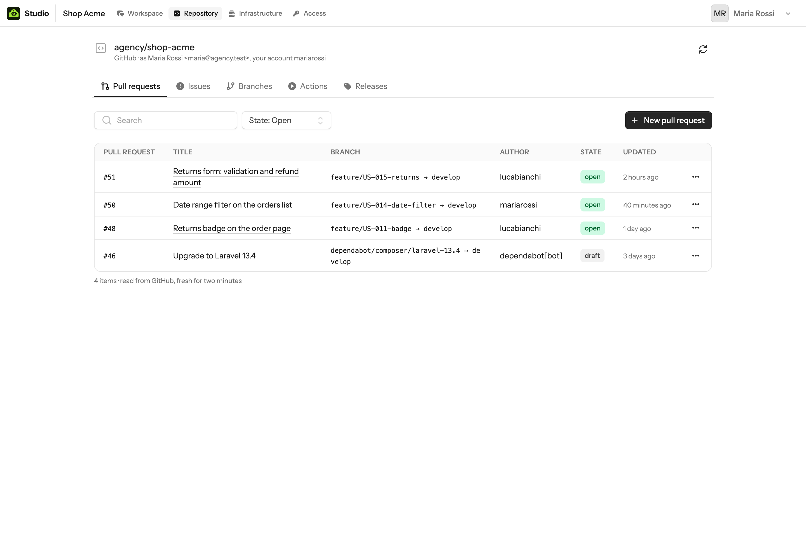
agency/shop-acme, read with Maria's own
GitHub account, the one her workspace commits with.The project's repository as Tools → Git shows it, without picking it: pull requests (with their conversation and diff), issues, branches, pipelines (Actions on GitHub) and releases. It reads and acts with your own account on the repository's host, the one your workspace commits with, so you may do here what the host lets that account do. Without an account on that host, the tab says so and leads to Settings → Accounts → Git.
Access
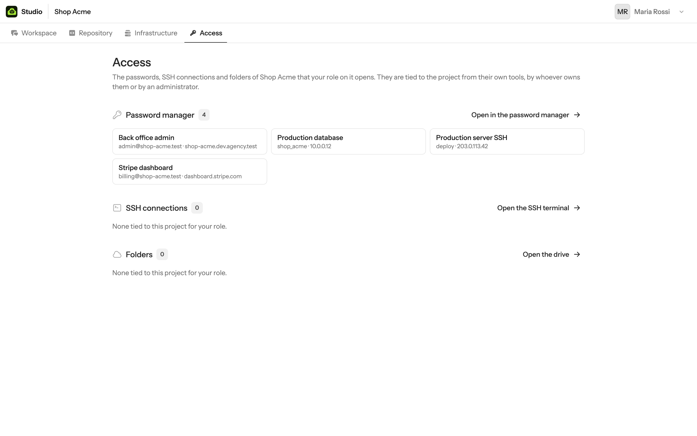
The passwords, SSH connections and folders tied to the project, by whoever owns them or by an administrator, in the Password manager, the SSH terminal and the Drive. You see those your role opens. An SSH connection says whether your own key or password for it is set; the SSH group shows only to who may use the SSH terminal. A folder says whether you may view it or view and edit it.
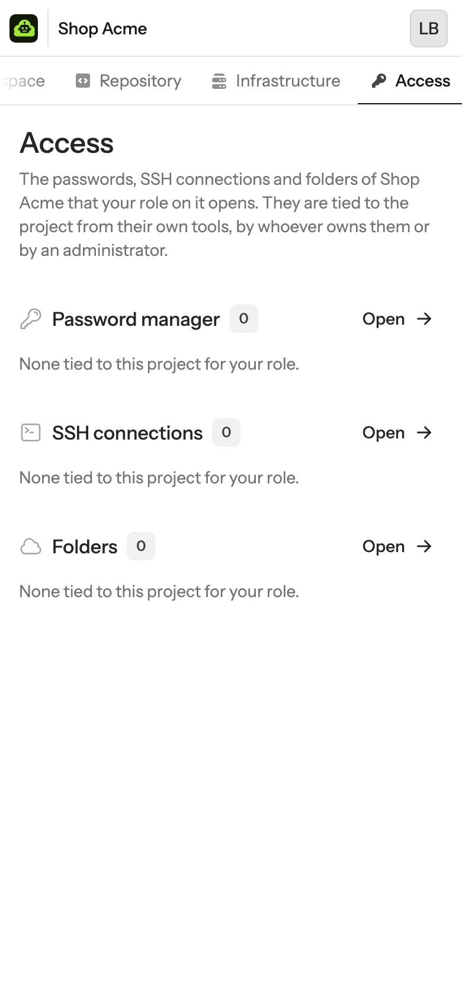
The chat
Three panes: your conversations, the chat, and the right pane with the preview, the changes, the terminal and the files. The chat is Claude Code with a face.
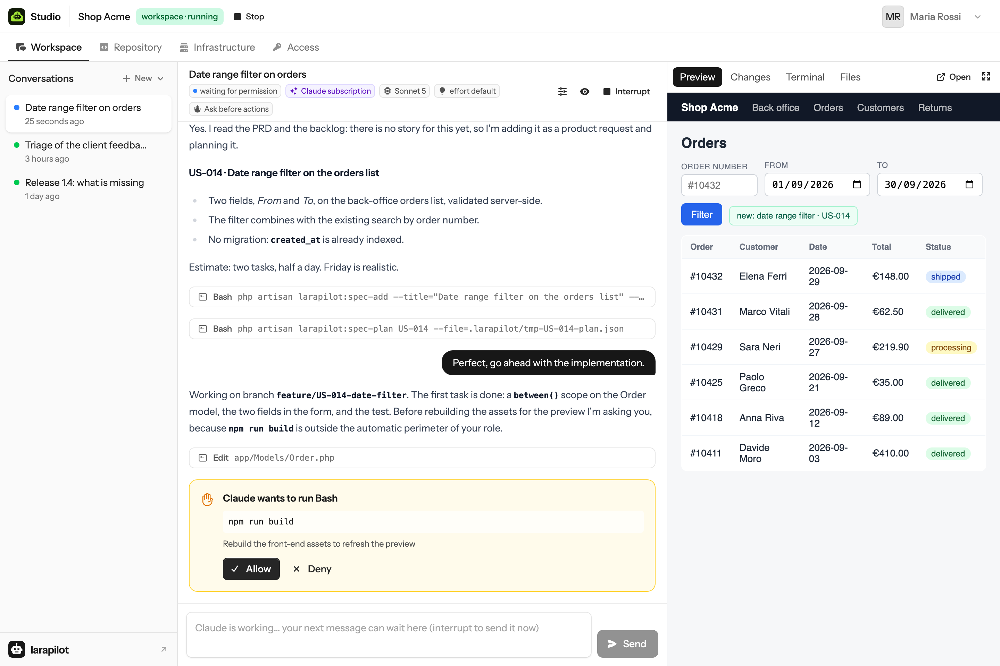
- Messages
- Yours on the right. Claude's as prose, with Markdown rendered and code inline. System notices, in red when something failed, say what to do.
- Streaming
- Text arrives as it is typed over Reverb. Without a websocket the chat polls every few seconds while the agent works; nothing is lost either way.
- Sessions
- A conversation keeps its Claude session id. Close the laptop, come back tomorrow: the next message resumes with the same memory. The title is the first message, trimmed.
- Interrupt
- Stops the current turn. The process is released; the next message resumes the session.
- Status bar
- Chips for the state, the Claude account the next message runs on, the model, the effort and the mode; a click opens Model & mode. A subscription shows its plan's usage (the five-hour window and the week); an API key, the estimated cost of the last turn.
- Several at once
- Open a new conversation for a separate topic. Conversations in your workspace share its branch, so keep one piece of work per conversation, or start it in a sandbox of its own.
- Screenshots
- Images in a tool's result, such as a browser screenshot or a picture Claude read, show as thumbnails under the call; a click opens one full size.
- The list
- A dot per conversation: amber while Claude works, blue when it asks you something, red when it failed, green when it finished since you last opened it. The bin deletes one, after a confirmation; only its owner can.
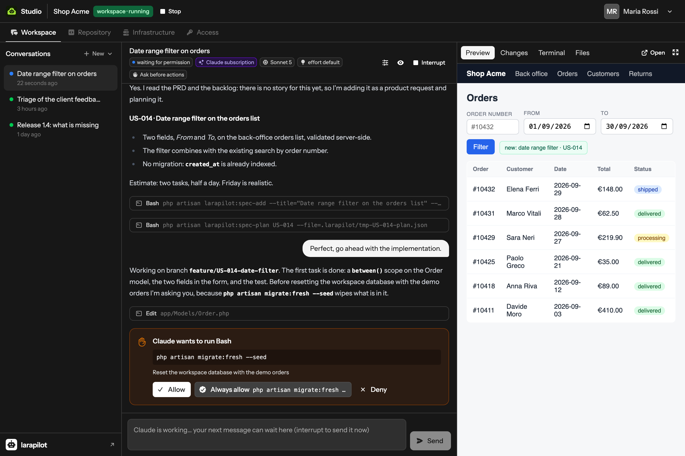
Permissions
Claude Code asks before running a tool its mode does not allow outright. In Studio the question is a card.
The card names the tool, shows the command or the file, and the reason when Claude gives one. Allow runs it with the input shown; Deny tells Claude the person declined, and the turn continues from there. While a question is open the conversation is marked waiting for permission in the sidebar, so a teammate glancing at the list sees who is blocked on whom.
| Preset | Claude Code mode | What runs without asking |
|---|---|---|
| PM | default | Reads and the tools Claude Code auto-approves; edits and commands ask |
| Developer, Administrator | acceptEdits | File edits in the workspace; commands ask |
| Client | plan | Nothing: a client cannot chat, the preset only applies if the role changes |
Bypass mode is disabled in every workspace by the managed settings. A question left unanswered when a turn ends is closed as denied. The decision, who took it and when, is stored with the conversation. The agent's browser never asks to look (open a page, take a screenshot, read the console); clicking and typing in it ask unless the mode allows edits.
Model, effort, autopilot
Each conversation chooses how Claude Code runs. Model & mode in the chat header opens the dialog; the choice applies from the next message and the session keeps its memory.
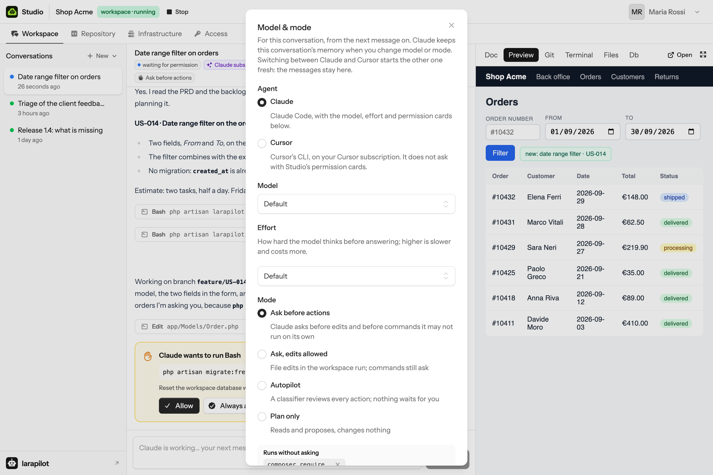
| Setting | Choices | Becomes |
|---|---|---|
| Model | Default, Fable 5.1, Opus 5.5, Sonnet 5.5, Haiku 4.5 (the list is in config/studio.php) | --model |
| Effort | Default, low, medium, high, max: how much the model thinks before it answers | --effort |
| Ask before actions | Claude asks before commands and edits outside the automatic scope | --permission-mode default |
| Ask, edits allowed | File edits in the workspace run; commands still ask | acceptEdits |
| Autopilot | No questions: Claude Code's classifier reviews each action before it runs; the turn goes to the end on its own | auto |
| Plan only | Reads, reasons and proposes; changes nothing | plan |
Which modes a person may pick follows their role on the project: modes_by_role in
config/studio.php; the role's starting mode is permission_mode. Bypass mode, the one with no review at all, is not offered and is disabled in
every workspace by the managed settings: autopilot is as far as it goes.
Skills & Claude's questions
The chat is Claude Code: a skill is a slash command typed in the input, and Claude's questions come back as a card to answer.
Skills
Type /larapilot-inception, /larapilot-triage, /larapilot-plan,
/larapilot-implement, /larapilot-review or any other skill, with the request after it, as
you would in the terminal. Larapilot projects keep their own skills in
.larapilot/skills/<name>/SKILL.md, committed with the code, and skills in Claude Code's own
.claude/skills/ count too: /acme-predeploy-gate works the same way. Add one from the chat
with /larapilot-custom-skill; commit, and every workspace has it at the next start.
Claude's questions
When a skill needs a decision (the effort of a Larapilot setup, how fine the backlog is, the Git mode), Claude asks with its question tool and the chat shows a card: each question with its options and what they mean, one choice or several where the question allows it, and a field for an answer of your own. Answer sends the choices back to the same turn and Claude goes on; Skip lets it go on with its own judgement and say what it chose. The conversation waits for the card like it waits for a permission.
The right pane
Where the conversation's effect shows up: Preview, Changes,
Terminal and Files. Clients see the Preview only. In a conversation that runs in a
sandbox, all four follow it: its preview, its changes, its files. The arrows after
the tabs open the pane full screen, and bring the conversations and the chat back as they were. The preview shows apps that
refuse to be framed (X-Frame-Options: DENY): on project and preview hosts Caddy lets Studio, and
only Studio, frame them.
- Preview
- The Laravel app of your workspace on your branch, served by the server at
<you>-<key>.<domain>. Open puts it in a tab, which always works; inside the pane the app must not forbid framing (X-Frame-Options). While the workspace is stopped, and for clients, the pane shows the project site.
- Changes
- A git client for the workspace: the working tree, the history, the branches, the stashes and the tags, read and run through the bridge; see Changes, history & branches. It refreshes after every stored chat event while the tab is open.
- Terminal
- Allowlisted commands in your workspace, without the agent in between; see Terminal.
- Files
- The workspace's files in the browser, with the editor of VS Code; see Files.
- Over SSH
- The workspace is a directory on the server. A developer with SSH access can open it in
an editor over SSH; the same Claude session resumes there with
claude --resume.
Files
A file manager and an editor for the workspace, in the right pane.
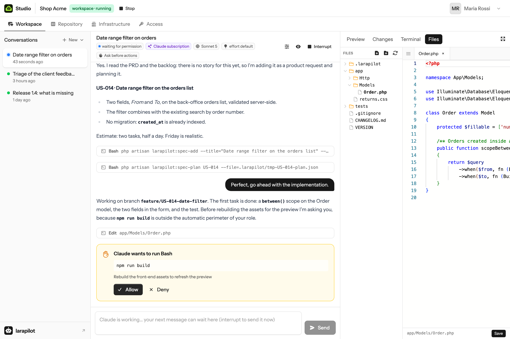
- Browse
- Folders open on click and load through the bridge;
.gitis never shown; the button next to the open tabs hides the tree when the editor needs the room. New file, new folder, rename and delete sit in the row menu; a folder is deleted with everything in it, after a confirmation.
- Edit
- Files open in tabs. Syntax highlighting follows the extension (PHP and Blade, JavaScript, TypeScript, CSS, JSON, Markdown, YAML, shell, SQL…), with VS Code's find, replace, multi-cursor and keyboard shortcuts. The theme follows Studio's light or dark mode.
- Save
- ⌘S / Ctrl+S or the Save button. Every file carries the hash of its bytes from when it was opened; if Claude or a terminal command changed it meanwhile, the save is refused and the tab says so instead of overwriting.
- Limits
- Binary files and files above
BRIDGE_FILE_MAX(512 KB) are described, not opened. The editor is loaded on first use, so the rest of Studio stays light. Everything runs as the workspace's own Linux user, so what a person can edit here is exactly what they could edit over SSH.
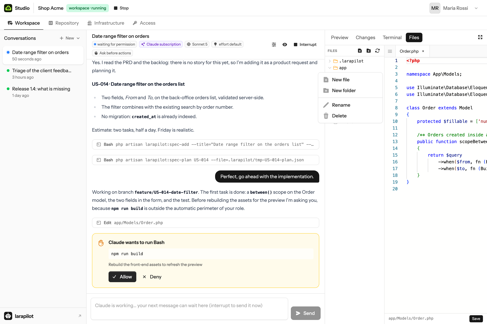
Changes, history & branches
The Changes tab is a git client for your workspace, or for the sandbox of the open conversation. Five views: the working tree, the history, the branches, the stashes and the tags. Pull, Push (or Publish for a branch the remote does not have yet) and Fetch sit on top.
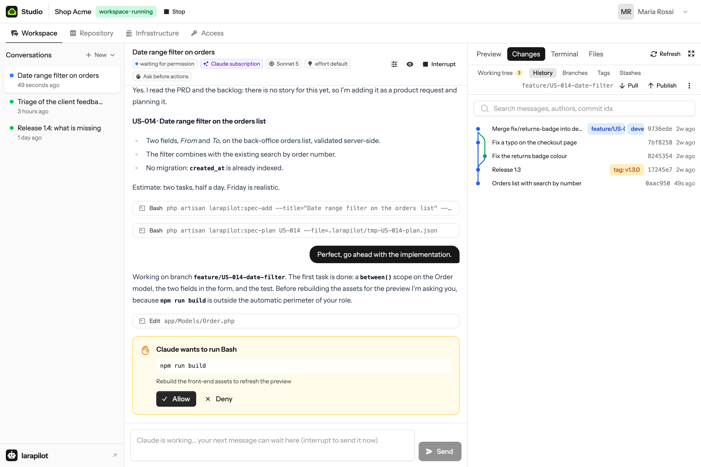
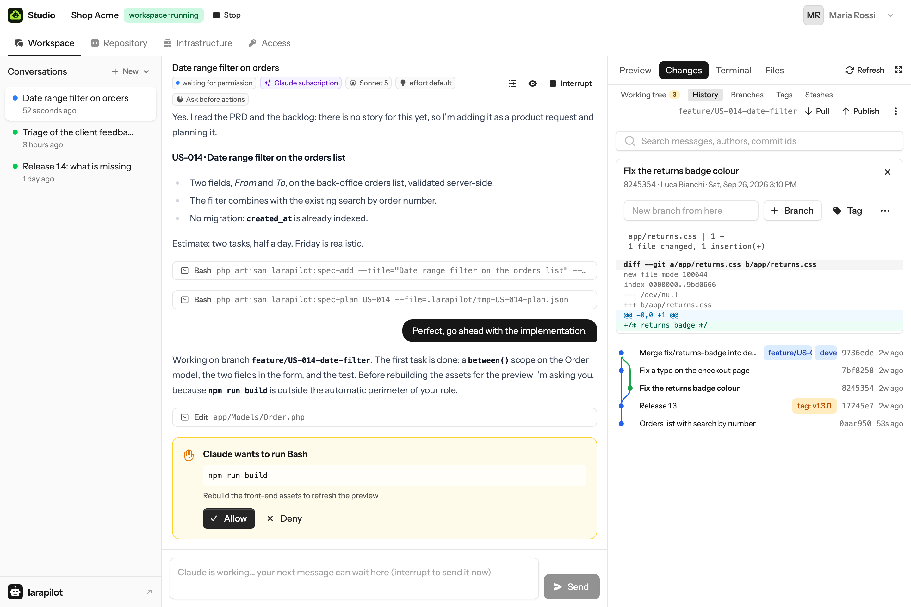
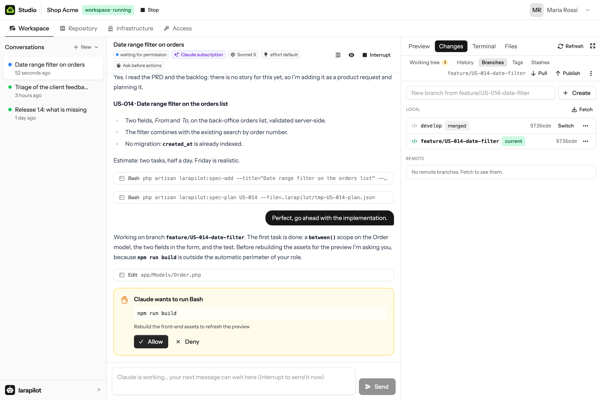
- Working tree
- What is not committed yet: each file with an icon in the colour of its kind (PHP, Blade, JS/TS, CSS, config, docs, images, data, scripts…), its name in the colour of what happened to it (modified, new, deleted and struck through, renamed, in conflict), and the lines it adds and removes with a five-block bar, as on GitHub. Stage and unstage, discard, commit (or Commit & push), amend the last commit. During a merge, pick a side for each conflicting file or edit it and mark it resolved, then commit to conclude or abort.
- History
- The commits of all branches in date order, drawn as lanes the way editors do: a branch opens
a lane, a merge closes it. Refs show as badges (branches,
origin/…, tags); search by message, author or id. A commit opens with its message, author, date, files and patch, and its menu reverts it, cherry-picks it, resets to it, starts a branch or a tag from it.
- Branches
- Local branches with their upstream and ahead/behind, remote branches. Switch checks one out in the workspace; the preview follows, and so does the access rule of that branch. Create, rename, merge into the current one (merge commit, squash or fast-forward), delete here or on the remote.
- Stashes and tags
- Put changes aside to switch branch, bring them back with Pop or Apply and keep. Tag a commit, with a message for an annotated tag, and push one tag or all of them.
Everything acts on your own workspace, as your Linux user, with your git account on the repository's host. What cannot be undone asks first and says so; a force push says what it replaces.
Terminal
A tab in the right pane runs commands in your workspace, as you, without the agent in between.
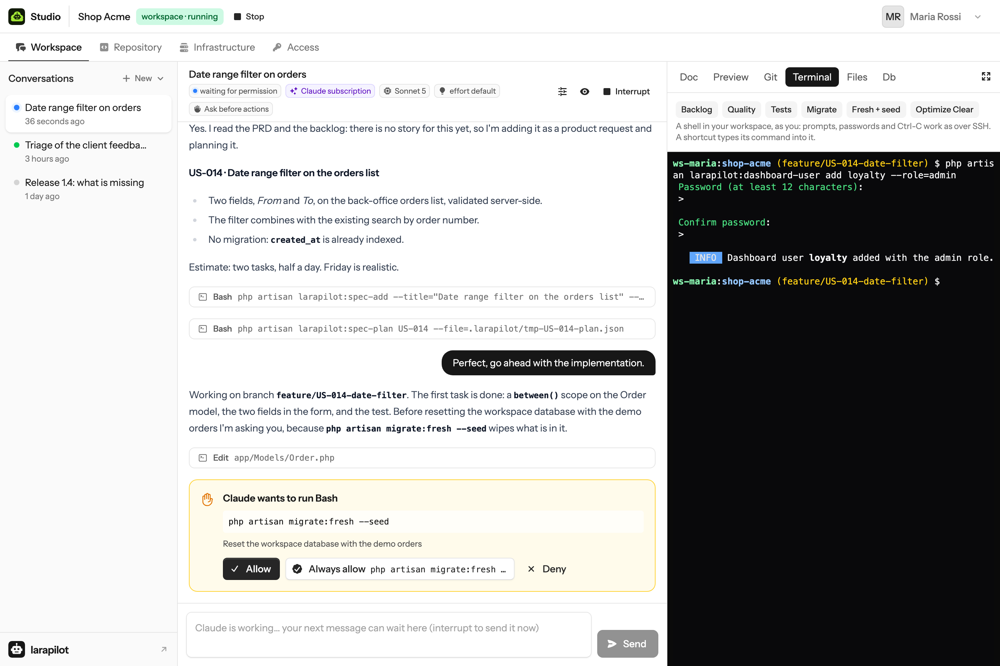
It is not a shell. The bridge takes the line, splits it into words, checks the binary and its first argument against a list, refuses anything that looks like shell syntax, and runs the binary directly in the workspace directory. Allowed today:
| Binary | Allowed | Refused |
|---|---|---|
php artisan … | Any artisan command with plain options | tinker, serve, db:wipe, down, migrate:fresh --force |
composer | install, update, require, remove, dump-autoload, show, outdated, audit, run, test, lint | everything else |
npm | ci, install, run …, test, outdated, audit, ls | everything else |
git | status, log, diff, branch, fetch, pull, checkout, switch, stash, show, add, commit, push, restore, remote, tag | --force, -f, branch -D, force pushes |
vendor/bin/… | pest, pint, phpstan, phpunit, rector | other binaries |
| any | plain words, paths and options | quotes, ;, &&, |, >, $(), backticks |
Output comes in colour: git, Composer, artisan and the test tools are asked for it, and the pane draws the ANSI
colours instead of their escape codes. Output is kept to 200 KB and a command is killed after ten minutes. The shortcuts come from
config/studio.php; the allowlist lives in the bridge (bridge/src/commands.js), so what the
dashboard sends is checked where it runs. Clients have no terminal.
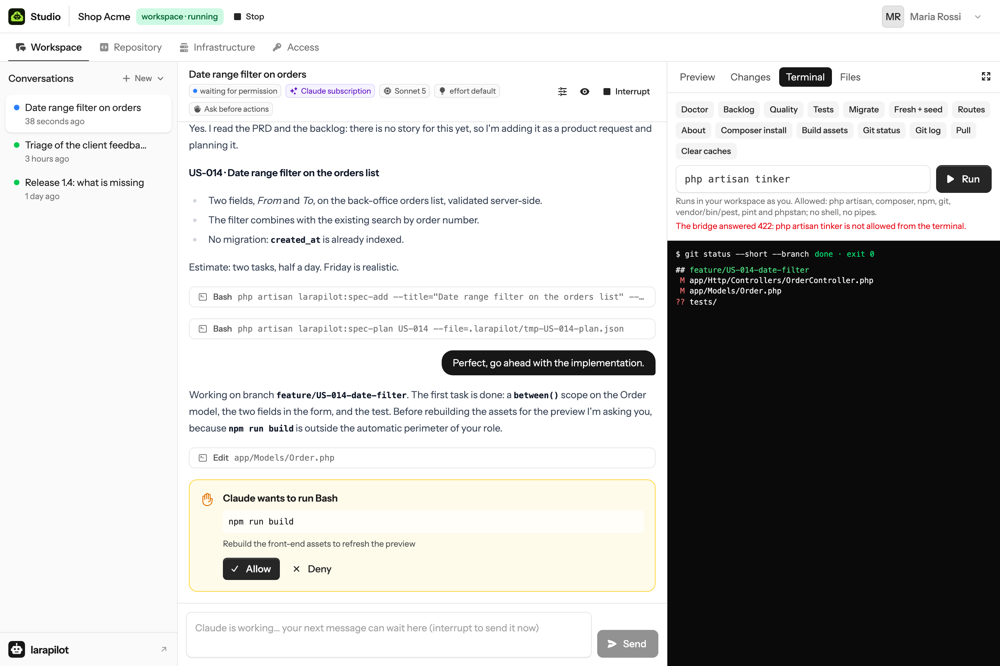
Subagents, plan mode, skills
The chat is the full Claude Code CLI running in the workspace. What works in the terminal works here.
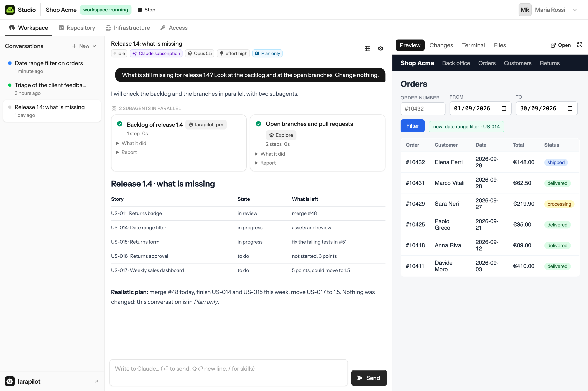
- Subagents
- Each subagent Claude starts is a card: what it was asked, its type, whether it is running, done, failed or stopped, its steps and time, the screenshots it took and its report. Those started together sit side by side. Details opens each step. Larapilot's personas and the autopilot worker use them.
- Studio's own
- Every chat also gets
code-reviewer, which reviews the diff, and, with the browser,browser-qa, which checks a flow in the running app like a tester would (one per flow, in parallel). A short paragraph tells Claude about the preview and the sandbox it works in. The repository's own.claude/agentsstill apply.
- Plan mode
- Plan only in Model & mode: Claude reads and proposes, touches nothing. Switch to another mode when the plan looks right.
- Skills and slash commands
- Every
/larapilot-*skill, the project's custom skills and any other skill in the repository: type the command.
- MCP servers
- Those in the repository's
.mcp.jsonare loaded, with secrets from the workspace environment, Laravel Boost and Larapilot's own server included; plus the remote servers added in the project's settings (see MCP servers) and Studio'sbrowser.
- Hooks
- Larapilot's workflow hooks and Claude Code hooks run as they would in an editor; their output is kept out of the chat.
- Not available
- What needs a screen: images pasted into the prompt, the interactive command palette, voice. Interrupt replaces Escape.
The agent's browser
Claude can look at what it builds. Every chat gets a headless Chromium on the server, signed in to the preview it works on as you.
- What it is
- Playwright
MCP, the MCP server
browserof the conversation. Studio installs it with its Chromium on the server; nothing runs in your own browser.
- What it sees
- The preview of your workspace, or of the conversation's sandbox, with your own pass for that host: the same gatekeeper and access rules as you. A fresh pass comes with every message. It never gets Studio's own cookie.
- What it does
- Opens pages, takes screenshots, reads the console and the failed requests: that never asks. Clicking, typing and filling forms ask for permission unless the mode allows edits.
- Screenshots
- Kept on Studio's disk with the conversation, shown as thumbnails under the call that took them (and on the subagent's card), full size on a click. They are served only to who may read the conversation, and removed with it.
On by default; an administrator turns it off for a project in Settings → Agent.
Ask for it in plain words ("open the orders page and check the filter on a phone") or let browser-qa
do it after a change.
Conversations in a sandbox
Try two ideas at once, or let Claude work on something long while you go on in your workspace. New → Conversation in a sandbox starts a conversation in a copy of your workspace of its own.
- The copy. A git worktree of your workspace on its own branch
(
sandbox/<handle>-<id>), with a copy of the workspace's database, its own build and its own preview at<handle>-<key>--c<id>.<domain>. It takes a moment to prepare; the chat says so. - The work. The conversation runs there, and the Preview, Changes, Terminal and Files tabs follow it: open another conversation and they follow that one. Several sandboxes run at once without touching the workspace or each other. Queues run inline there; the scheduler and Reverb are off.
- Keep it. Merge into my workspace, on the bar above the chat, commits what the sandbox holds and merges its branch into the branch of your workspace, all or nothing: a conflict leaves both as they are. Or Push the branch, in the same bar's menu, to open a pull request from it.
- Drop it. Remove the sandbox deletes the worktree, its database and its preview, and asks whether to keep its branch or discard it too. Work not committed is lost. The conversation stays, to read.
Up to 3 sandboxes per person by default; an administrator changes the number, or turns sandboxes off for a project, in Settings → Agent. Deleting a workspace deletes its sandboxes.
Workspaces
A workspace is created the first time you open a project, started and stopped from the header, checked against the server every minute.
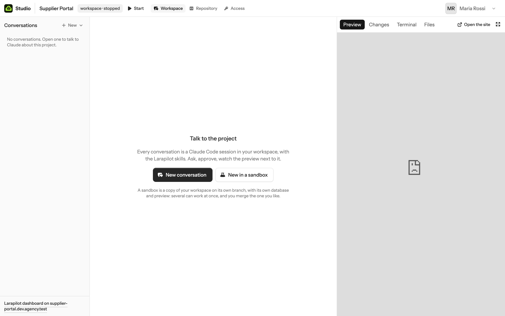
- Start / Stop start or stop the bridge and release the preview. Conversations and their sessions stay; a stopped workspace cannot receive a message, and the input says so.
- What persists: everything, it is a directory and a database on the server: the clone, the dependencies, the Claude login in the person's home.
- What does not: work that is not pushed, if the workspace is deleted. Keep branches short and pull requests small; the Larapilot loop wants that anyway.
- Memory: PHP-FPM pools are on demand and a stopped workspace costs nothing; the Claude Code process is released after ten idle minutes and resumed on the next message.
- Sandboxes live next to the workspace, one per conversation that asked for one (see Sandboxes), and go when it is deleted.
Clients
A client on a project sees it and its staging site as preview, with its Larapilot dashboard behind the same login, and what is shared with the project's clients in its Access and Infrastructure tabs: passwords, folders, servers. No chat, no workspace, no repository, terminal or files, no cost.
It is the role for the person who pays: they follow what is in review and what shipped without opening another tool, and without an email thread. If a client should also talk to the project, give them the PM role on it in Settings → Members & roles; from then on they have a workspace there and need a Claude plan of their own. On their other projects they stay what they were.
SSH terminal
Tools → SSH terminal, for administrators, developers by default and whoever is a developer on at least one project: real terminals in the browser to any server, opened from Studio's server.
- Connections
- Host, port, user and a key or a password, saved per person; favourites stay on top. A click opens a terminal; open as many as you like, in tabs or all side by side.
- Keys
- Generate Ed25519 or RSA 4096, or import yours (OpenSSH, PEM, PuTTY, with its passphrase, which is
not kept). The page shows the public key and the command that adds it to
authorized_keys. The same keys are in Settings → Accounts → SSH keys.
- Host keys
- The first connection shows the server's fingerprint and asks; from then on a different key is refused.
- Shared with a project
- Tie a connection to a project and the administrators and the project's developers find host, port and user ready, tagged with your name, here and in the project's Access tab. Each connects with a key or password of their own: credentials are never shared.
Private keys and passwords are encrypted with APP_KEY and never reach the browser. The page asks Studio
for a one-time ticket (60 seconds) and opens a WebSocket to the gateway, studio-ssh
(ssh-gateway/, behind Caddy at /ssh/ws), which redeems the ticket on the loopback and only
then sees host and secret. The page asks for your password again, as Settings → Security does.
Password manager
Tools → Password manager: the team's credentials, encrypted on the server, shared on purpose.
- Items: title, URL, username, password, notes and a two-factor secret (base32 or
otpauth://), for which Studio shows the current code. A generator makes passwords of any length. - Folders: yours, nested, to put your own items in order, and to share many at once (below).
- Projects: tie an item to a project and tick which roles on that project see it: clients, PMs, developers. It shows in the project's Access tab too. Administrators see every project item.
- People: share an item with a single person, to view or to edit. The sharing dialog shows who sees it and why.
- Shared folders: Sharing in a folder's menu shares it as an item is shared, with a project for the roles ticked and with single people, to view or to edit. Everything inside it goes with it: its items, the folders inside it and what is added later. Who receives it finds it under Shared folders, with the folders inside it; who may edit changes the items and adds new ones, which stay the owner's. The folder itself, its sharing and removing items stay the owner's. A folder tied to a project shows under the project and in its Access tab; an item's sharing table says which folder brings it to whom.
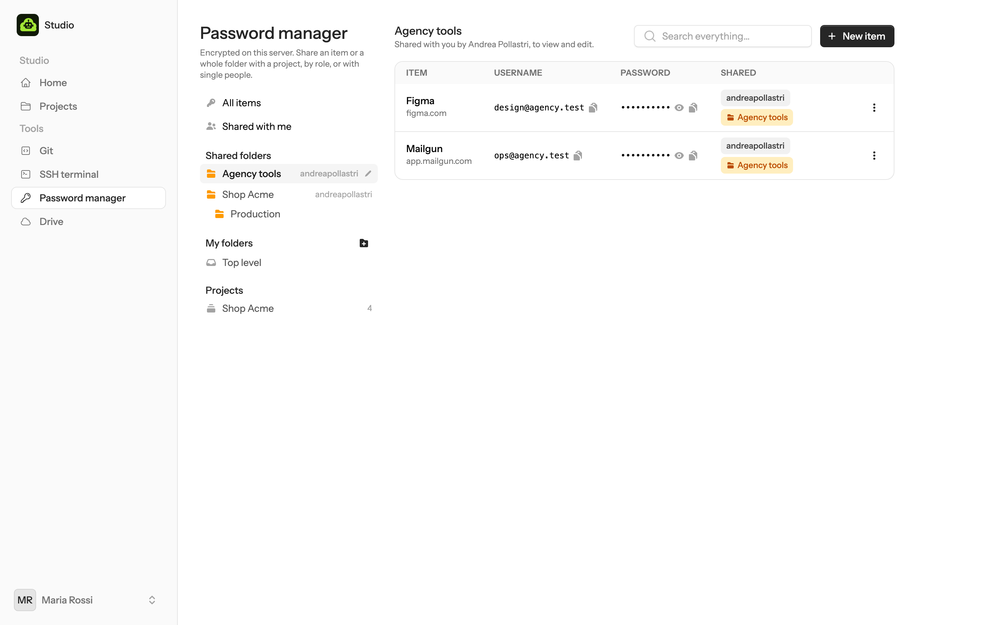
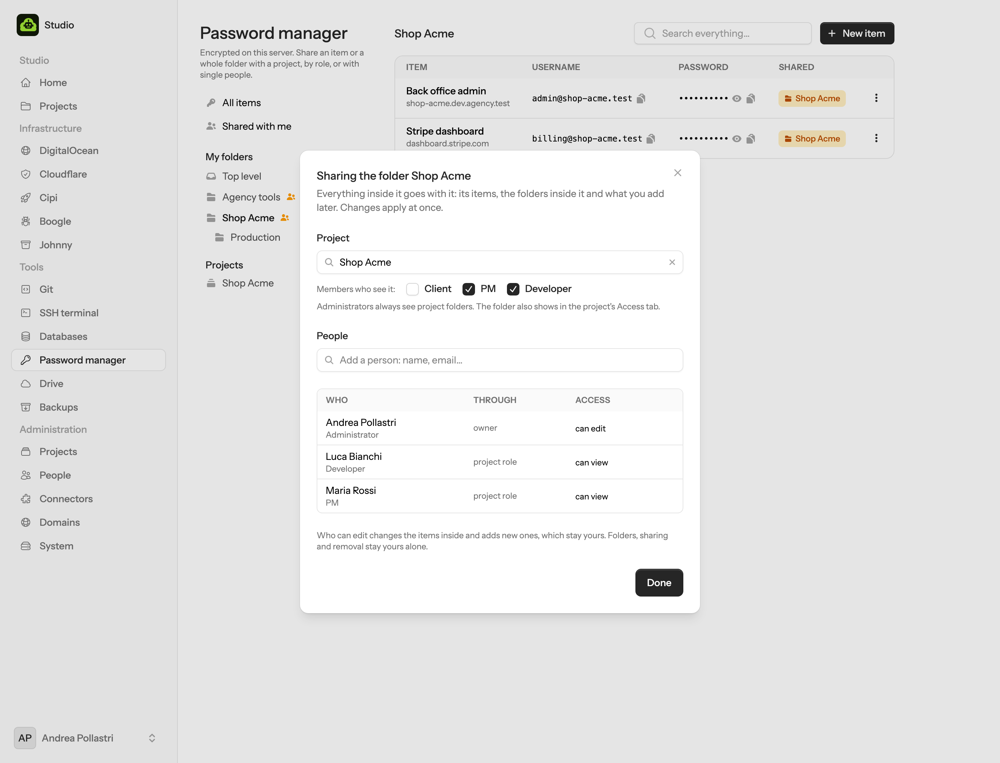
Everything but title and URL is encrypted with APP_KEY. Secrets do not sit in the page: they come
from the server when you press show or copy. Personal items stay personal, also for administrators; clients see
what is shared with them and create nothing.
Drive
Tools → Drive: folders and files on Studio's own disk, with access by project and role.
- Files: upload with the button or by dropping them on the page, up to
STUDIO_DRIVE_MAX_UPLOAD_MB(100) each; rename, move, remove, download; images and PDFs open in the browser. - Access: tie a folder to a project and choose, for its clients, PMs and developers (their role on that project), no access, view, or view and edit. It applies to everything inside, down to a folder tied to another project, and the folder shows in the project's Access tab. The owner of a top folder and the administrators always read and write; everyone but clients creates folders.
- Into the workspace: from a folder tied to a project, Copy or Move into the workspace sends a file, a selection or the whole folder into your workspace of that project, where you choose; a move removes from the drive only what arrived.
Git
Tools → Git: what waits for you on the git hosts you work with, and the actions to clear it, with your own accounts on any of them, in one dashboard.
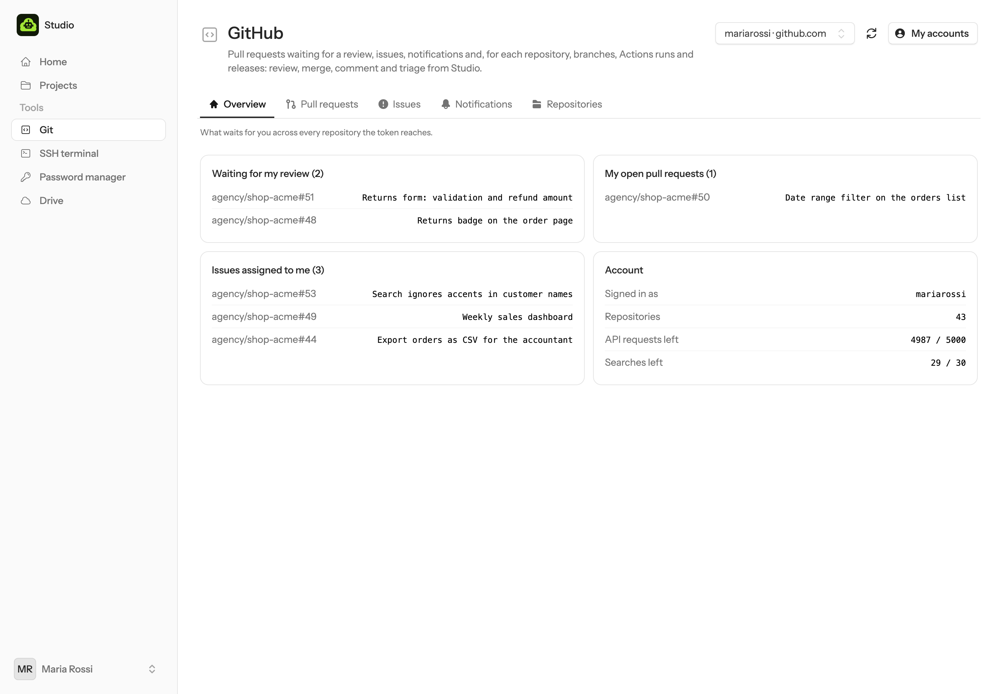
- Which hosts. GitHub, GitLab (gitlab.com or self-managed), Bitbucket Cloud and Azure DevOps: all four, always, for everyone.
- Your accounts. In Settings → Accounts → Git (My accounts on the Git page leads there), Add an account: the host, a name (Personal, Work, Client X), the token described below and, if you want, the name and email your commits carry with that account. Left empty, Studio takes them from the provider (your primary or commit email, or the provider's noreply address) and otherwise from your Studio profile. Add as many accounts as you work with, on as many hosts; only you see them. Check, edit and remove them there too.
- Work. Pick the account at the top: the picker holds all your accounts, on every host, and moves between them. Overview lists what waits for you: pull requests asking for your review, your open ones, issues assigned to you. The other tabs: pull requests and issues across every repository (whose: waiting for my review, opened by me, assigned to me…; which state), notifications or to-dos, and the repositories, each with its pull requests, issues, branches, pipelines and releases.
- Pull and merge requests
- Read the description and the whole conversation, the changes (diff), comment, approve or request changes, ask for reviewers, merge (merge commit, squash or rebase, deleting the branch), close and reopen, edit title, description and labels.
- Issues and work items
- Read with the comments, comment, assign to yourself, edit title, description and labels, close and reopen (Azure DevOps: change the state), create one in any repository.
- Repositories
- Create (in your namespace or an organisation, group, workspace or project), clone addresses, archive, delete; branches (create from another, open a pull request from one, delete); pipelines (start one on a branch, read the jobs, retry, cancel); releases (with notes, publish a draft, delete).
Titles open the page on the provider in a new tab. What Studio reads stays fresh for two minutes; whatever you do from the page clears it. Every action is written to Studio's log with who did it and with which account. A project's own repository is also in its Repository tab, and Home shows a card per account with what waits there.
GitHub
Overview, pull requests, issues, notifications, repositories with branches, Actions runs and releases.
- github.com → Settings → Developer settings → Personal access tokens → Tokens (classic) → Generate new token (classic).
- Scopes:
repo,workflow,read:org,user:email(the commit email) andnotifications; administrators addadmin:repo_hook(site deploys) anddelete_repo(to delete repositories from Studio). The same token clones and pushes in your workspaces (The git hosts). - A fine-grained token works too, for the repositories it names (Contents, Issues, Pull requests, Actions: read and write; Metadata: read), but GitHub does not let it read notifications.
Organisations with SAML single sign-on want the token authorised for them: Configure SSO next to it.
GitLab
gitlab.com or a self-managed GitLab: overview, merge requests, issues, to-dos, projects with branches, pipelines and releases.
- GitLab → Preferences → Access tokens → Add new token, with an expiry date.
- Scope
api(everything on this page).read_apilets you look without acting. - In Studio: the token and, for a self-managed GitLab, its address (
https://gitlab.example.com).
Merging when the pipeline succeeds sets auto-merge; deleting a project follows the instance's delayed-deletion setting.
Bitbucket
Bitbucket Cloud: overview, your pull requests and those waiting for your review, repositories with pull requests, issues, branches and Pipelines.
- Atlassian account → Security → API tokens → Create API token with scopes, app Bitbucket.
- Scopes: read and write on repositories, pull requests, issues and pipelines; read on account (the commit email) and workspace membership; delete on repositories only to delete them from Studio.
Bitbucket has no list of the pull requests waiting for your review: Studio looks for them in the 20 repositories updated last. Issues show for the repositories whose issue tracker is on.
Azure DevOps
One organization per account: overview, pull requests and your votes, work items, repositories with branches and pipelines.
https://dev.azure.com/<organization>→ User settings → Personal access tokens → New Token, for that organization.- Scopes: Code (read, write and manage), Work items (read and write), Build (read and execute), Project and team (read).
- In Studio: the organization's address and the token. Another organization is another account.
Votes are those of Azure DevOps (approve, approve with suggestions, wait for author, reject); Complete merges now or sets auto-complete for when the branch policies pass. Pull requests across the organization are read from its first 20 projects, or from the one picked in the filter.
Connectors
The clouds and services your servers run on, driven from Studio through their APIs: AWS, DigitalOcean, Hetzner, Cloudflare, Cipi, Boogle, Hackly and Johnny. Servers, DNS, firewalls, volumes, databases, apps, deploys, exceptions and security findings, without opening seven consoles.
- For administrators
- Connector pages exist only for administrators. PMs, developers and clients never see the menu, the pages or the accounts; they see only what an administrator attached to their project, in its Infrastructure tab.
- On or off
- A connector is off until an administrator turns it on. Only the ones that are on appear in the menu, in the folding Infrastructure group after Tools.
- Many accounts
- Each connector holds any number of accounts: several AWS accounts, a DigitalOcean team per client, a Hetzner project each, one Cipi server each, several Boogle, Hackly or Johnny instances.
- Credentials
- Checked against the provider before they are saved, stored encrypted with
APP_KEY, never shown again and never sent to the browser.
Turn a connector on
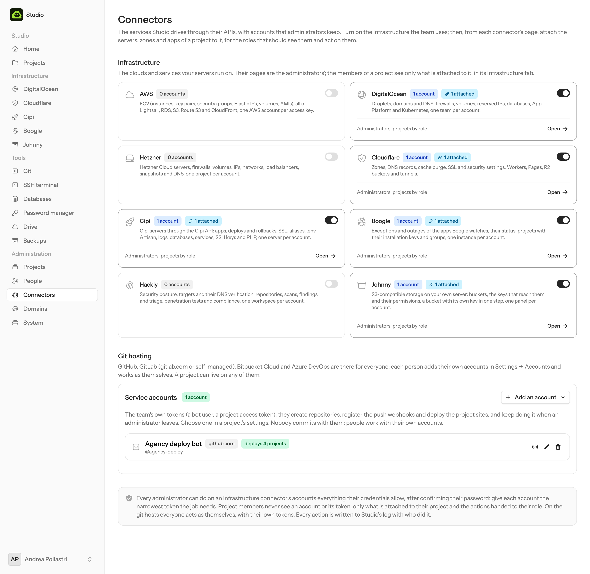
- Administration → Connectors. Each card says what the connector drives, how many accounts it has and how many of its things are attached to projects. Below the cards, Git hosting holds the team's git service accounts.
- Flip the switch. The connector shows in the menu right away; Open (or Add an account when it has none) takes you to its page.
- Turning it off removes it from the menu and closes its pages at the next click. Its accounts, and what is attached to projects, stay, ready for when it is turned on again; delete them from the connector page if they should go.
Accounts
On a connector's page, Accounts (top right) lists the accounts with their state (working or failing, what the provider answered, when it was last checked) and opens the form.
- Add: Add an account, a name the team recognises (Production, Client X, eu-server-2), the credentials the provider's page below describes, then Check and save. Studio calls the provider with them first: a wrong or too weak token is refused with the provider's own words and nothing is saved.
- Check: the signal button asks the provider again, for instance after changing the token's permissions there.
- Rotate a token: create the new one at the provider, Edit the account, paste it, save; then revoke the old one at the provider. Secret fields are empty in the form: left empty, the stored value stays.
- Remove: deletes the account from Studio. The token still works at the provider until you revoke it there.
The links in the form lead to the page of this guide for that provider and to the provider's own documentation.
Working on a connector page
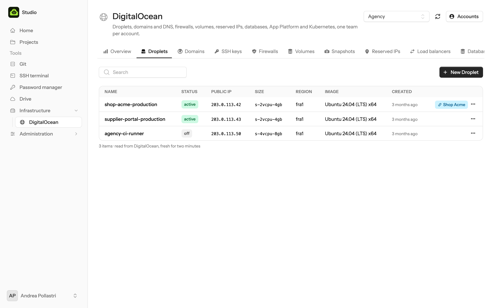
- Account: the menu at the top picks the account; the arrow next to it reads everything again from the provider.
- Tabs: one per kind of thing (Droplets, Zones, Apps…). AWS has many, so they come in groups (Account, EC2, Lightsail, Databases, Storage & CDN, Route 53): the first row picks the group, the second the tab.
- Search and filters: the search box filters what is on screen; filters ask the provider again: the region for AWS, the Cloudflare account, the status of Boogle exceptions and Hackly findings.
- Create: the dark button on the right (New Droplet, Add a zone, New app…) opens a form. Choices such as regions, sizes, images, SSH keys or servers come from the provider for the account and region picked.
- Row actions: the … menu at the end of a row holds what can be done on it; only the actions that make sense in its state show (no Start on a running server). Buttons on the row itself open what lives inside it, such as the DNS records of a zone or the aliases of a Cipi app; the arrow at the top left goes back.
- Attach to a project: the … menu of a row also has Attach to a project…, and a badge on the row names each project it is attached to. See Attached to projects.
- Confirmations: anything that stops, deletes or overwrites asks first, in words that say what will happen. Actions with a form ask when the form is sent.
- Results: what an action hands back (a new root password, a generated private key, a database password, the nameservers to set, a TXT record to publish, logs, a zone file) opens in a window with Copy. Secrets are shown once: store them, for instance in the Password manager. When the provider is still working in the background (a Cipi deploy, for instance), the window says so and Check again asks once more.
Lists are cached for two minutes per account, so moving between tabs is quick and providers' rate limits are spared; every action from the page, and the refresh arrow, clear the cache of that account. A change made in the provider's own console shows here within two minutes, or at once with the arrow.
/opt/studio/shared/storage/logs/laravel.log
on the server, as an infrastructure line with the person, the connector, the account, the tab, the
action and the row, and the project resource when it ran from a project's tab:
grep '"infrastructure"' laravel.log.When something does not work
| Studio says | Why | What to do |
|---|---|---|
| Refused (401): check the credentials | The token is wrong, expired or revoked | Create a new one and Edit the account |
| Not allowed (403): the token lacks a permission | The token works but may not do this | Add the permission at the provider (see its page below), then Check |
| Not reachable | The address is wrong, the host is down, or a firewall or IP allowlist stops Studio's server | Check the address; allow Studio's IP (Cipi: cipi api ip-whitelist add) |
| An AWS code such as UnauthorizedOperation or AccessDenied | The IAM policy lacks that action | Add it to the policy below |
| That is no longer in the list. Refreshed. | The row changed or went away at the provider since the page was drawn | Look at the refreshed list and try again |
| An empty list where you expect things | Another account, region or filter | Check the account at the top and the filters; AWS lists one region at a time |
Attached to projects
The members of a project never see a connector's page. An administrator hands them what belongs to their project instead: the Droplet it runs on, its Cloudflare zone, its Cipi app, its Boogle project, with the actions their role may run.
- Attach. On the connector's page, find the row and choose Attach to a project… in its … menu. The filters and the region the list was read with are kept, so the project reads it the same way.
- The dialog. The project; the name shown in the project; Who sees it (PM, Developer, Client); Who acts on it; and What they may do: the row's own actions, plus the row and list actions of the lists it opens (the DNS records of a zone, the exceptions of a project), each with its list and marked when it is destructive. PMs and developers see it and developers act on it at first; no action is ticked until you tick it.
- The badge. The row then shows a badge for each project it is attached to. A click on the badge opens the dialog again: change it, or Detach. Nothing changes at the provider either way.
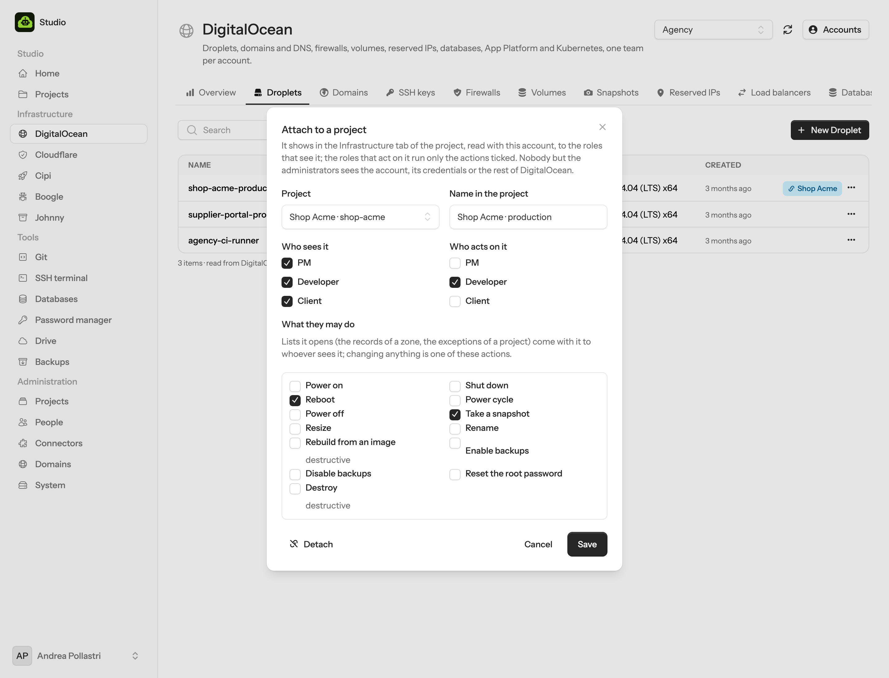
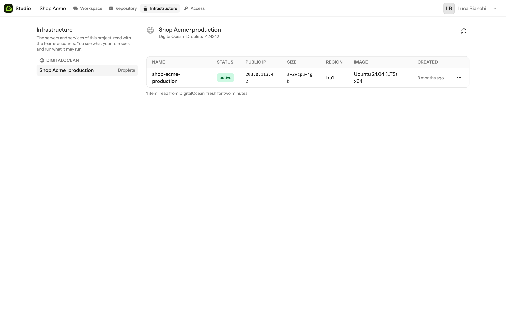
- What members see
- The project's Infrastructure tab lists what is attached for their role. Each opens as that row alone, read with the administrators' account, and the lists it opens. They never see the account, its token or any other row.
- What they may do
- Only the actions handed to their role, and only when their role acts on it (a role that acts on it also sees it). List actions of the resource's own list, such as creating another Droplet, are never handed over.
- From the project
- Administrators see everything attached in the tab, with a bar that says who Sees it, who Acts on it and how many actions are handed over; Who sees and does what changes it, or detaches it. The tab's Attach menu leads to the connectors' pages.
- Logged
- Every action is written to Studio's log, as on a connector's page, with who did it and the project resource. Administration → Connectors shows how many things each connector has attached.
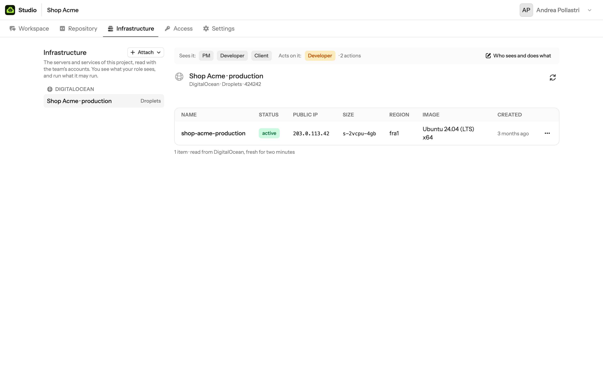
AWS
One Studio account per AWS account, signed with the access key of an IAM user made for Studio. Studio signs its requests itself (Signature Version 4), no SDK and no CLI on the server.
- EC2
- Instances: launch (newest Ubuntu LTS or any AMI, type, key pair, security group, subnet, disk, cloud-init), start, stop, reboot, terminate, change type, create an image, console output, termination protection. Key pairs (generate, import), security groups (open and close ports), Elastic IPs, EBS volumes (attach, detach, snapshot, resize), AMIs.
- Lightsail, all of it
- Instances (create, power, snapshots, firewall ports, SSH access details), instance and disk snapshots (restore to a new instance or disk), static IPs, disks, key pairs, managed databases (power, snapshot, master password, public access), load balancers, container services, buckets (public or private, plan, access keys), DNS zones and records, distributions (CDN), certificates, alarms, the operations log.
- The rest
- RDS (start, stop, reboot, snapshot, class), S3 buckets (create, delete, region), Route 53 zones and records, CloudFront (invalidate), and on Overview the identity and the cost of the month by service (Cost Explorer charges $0.01 a request, so it is a button).
The credentials
- AWS console → IAM → Users → Create user, for instance
studio, without access to the console. - Permissions → Add permissions → Create inline policy → JSON: paste the policy below, name it
studio. For an account the team only looks at, attach AWS'sReadOnlyAccessinstead. - The user's Security credentials → Create access key, use case Application running outside AWS.
Copy the Access key ID (
AKIA…) and the Secret access key: AWS shows the secret once. - In Studio: both keys and the Default region, the one most of your servers are in (each tab's region filter switches to another). The Session token is only for temporary credentials (STS, IAM Identity Center), which expire within hours: prefer the IAM user.
{
"Version": "2012-10-17",
"Statement": [{
"Effect": "Allow",
"Action": [
"ec2:*", "lightsail:*",
"rds:Describe*", "rds:StartDBInstance", "rds:StopDBInstance", "rds:RebootDBInstance",
"rds:CreateDBSnapshot", "rds:ModifyDBInstance",
"s3:ListAllMyBuckets", "s3:GetBucketLocation", "s3:CreateBucket", "s3:DeleteBucket",
"route53:*",
"cloudfront:ListDistributions", "cloudfront:GetDistribution", "cloudfront:CreateInvalidation",
"ce:GetCostAndUsage"
],
"Resource": "*"
}]
}Keep only what the team uses: without the rds: lines the RDS tab shows AWS's refusal and everything
else works. The first Lightsail database or container service needs a service-linked role; if AWS refuses it, add
"iam:CreateServiceLinkedRole". To rotate, create a second access key on the same user (AWS allows
two), edit the account in Studio, then deactivate and delete the old key.
Typical tasks
- A new EC2 server with a fixed IP: EC2 → Key pairs → Import a public key (once); Security groups → New security group, then Open a port for 22, 80 and 443; EC2 instances → Launch an instance with that key and group; Elastic IPs → Allocate an IP, then Associate with the instance.
- A Lightsail server with its domain: Lightsail → Instances → New instance; Static IPs → Allocate a static IP → Attach; DNS zones → New DNS zone, set the nameservers it shows at the registrar, then Records → New record (A, the static IP).
- Before a risky change: Snapshot in the instance's menu (Lightsail), or Create an image (AMI) (EC2); restore from Instance snapshots → New instance from it.
- After a deploy: Storage & CDN → CloudFront → Invalidate with
/*, or Lightsail → Distributions → Reset the cache.
DigitalOcean
One Studio account per team, with a personal access token of that team.
Droplets (create with region, size, image, SSH keys, backups, IPv6, monitoring, tags, cloud-init; power on, shut down, reboot, power cycle, power off, snapshot, resize, rename, rebuild, backups, root password reset, destroy), domains and DNS records, SSH keys, firewalls (create, apply to Droplets), volumes (attach, detach, resize), snapshots, reserved IPs, load balancers, managed databases (connection details, backups, databases inside), App Platform (deploy, deployments, spec), Kubernetes (kubeconfig, node pools), the usage and balance of the month.
The credentials
- cloud.digitalocean.com → API → Tokens: switch to the team to drive first (top left), then Generate New Token.
- A name (
studio), an expiration, and Full Access; or Custom Scopes with read and write on droplet, domain, ssh_key, firewall, block_storage, snapshot, reserved_ip, load_balancer, database, app and kubernetes, plus read on account, billing, regions, sizes and image. - Copy the token (
dop_v1_…, shown once) into Personal access token. One account per team; when the token expires, generate a new one and edit the account.
Typical tasks
- A new server: SSH keys → Add a key (once); Droplets → New Droplet with
region, size, image and the key; Firewalls → New firewall with
22, 80, 443and the Droplet. - Its domain: Domains → Add a domain (with the Droplet's IP for the apex), set the
nameservers
ns1–ns3.digitalocean.comat the registrar, then DNS records → New record forwww. - Bigger: Shut down, Resize (tick the disk only if you will never go back), Power on.
Hetzner
Hetzner Cloud. A token belongs to one project, so each project is a Studio account of its own.
Servers (create with type, location, image, SSH keys, firewalls, IPv4/IPv6, backups, cloud-init; power on, shut down, reboot, reset, power off, snapshot, change type, rename, rescue mode, root password reset, rebuild, backups, protection, delete), SSH keys, firewalls (inbound ports and the servers they apply to), volumes, floating and primary IPs, networks, load balancers, snapshots and backups, managed certificates, DNS zones and record sets.
The credentials
- console.hetzner.com → the project → Security → API tokens → Generate API token.
- A description (
studio) and Read & Write; Read lists but cannot act. - Copy the token (shown once) into API token. Name the Studio account after the project.
DNS zones are the project's zones in Hetzner Console (DNS inside the Cloud API). Zones still on the old dns.hetzner.com do not show until they are moved to the Console.
Typical tasks
- A new server: SSH keys → Add a key; Firewalls → New firewall with
22, 80, 443; Servers → New server with type, location, image, the key and the firewall. Without a key Hetzner sets a root password, which Studio shows once. - Locked out of a server: Rescue mode (Studio shows the rescue root password), then Reboot; fix it over SSH; Leave rescue mode and reboot again.
- Open one more port: Firewalls → Inbound ports and edit the list; it replaces the rules of that firewall.
Cloudflare
One Studio account per API token. A token can reach several Cloudflare accounts: the account tabs have a filter to pick one.
Zones (add, with the nameservers to set; purge everything or some URLs; SSL/TLS mode, Always use HTTPS, minimum TLS, security level and I'm under attack, development mode, Brotli; current settings; pause, activation check, delete), DNS records (create, edit, proxy on and off, delete, export as BIND), Workers, Pages (deploy, recent deployments), R2 buckets and tunnels (create, the command that runs them, public hostnames).
The credentials
- dash.cloudflare.com → My Profile → API Tokens → Create Token → Create Custom Token. Not the Global API Key, which Studio does not accept.
- Permissions, keeping only the rows you need:
Scope Permission For Zone Zone: Edit · Zone Settings: Edit · DNS: Edit · Cache Purge: Purge Zones, settings, records, purge Account Account Settings: Read Listing the accounts (needed) Account Workers Scripts: Edit · Cloudflare Pages: Edit · Workers R2 Storage: Edit · Cloudflare Tunnel: Edit The Workers, Pages, R2 and Tunnels tabs - Account Resources: the account(s) to drive; Zone Resources: All zones from an account, or only some zones. An expiry (TTL) is a good idea.
- Copy the token (shown once) into API token.
Typical tasks
- Move a domain to Cloudflare: Zones → Add a zone (the existing records are imported); set the two nameservers Studio shows at the registrar; Check activation until the zone is active; then Settings → SSL/TLS Full (strict) and Always use HTTPS.
- Under attack: the zone's Settings → Security level I'm under attack; back to Medium when it is over.
- After a deploy: Purge everything, or Purge URLs for a few files.
Deploy on Pages builds the production branch again, for projects connected to git; projects uploaded by hand deploy from where they are built.
Cipi
Servers run with Cipi: one Studio account per server, through the Cipi API, the same the Cipi GUI uses to manage a fleet.
The server's status, services, PHP and disk by app; apps (create Laravel, custom or Octane apps; deploy, roll back,
unlock, deploy history, aliases, SSL over HTTP or Cloudflare DNS-01 with wildcards, force HTTPS, www redirect,
Artisan, whitelisted commands, logs, .env read and set, edit domain, PHP, repository and branch,
password protection, health check, limits, fix permissions, suspend, delete), databases (create, backup, new
password), services (restart), the cipi user's SSH keys, PHP versions (install).
The credentials
- Point a host of the server to it in DNS, for instance
api.server1.example.com. - On the server, as root:
cipi api api.server1.example.com, thencipi api sslfor its certificate. cipi api token create, choosing the abilities when asked (php artisan cipi:token-abilitieslists them). For everything Studio does: apps-view, apps-create, apps-edit, apps-delete, apps-suspend, apps-basicauth, apps-env, apps-artisan, apps-run, deploy-manage, aliases-view, aliases-create, aliases-delete, ssl-manage, www-manage, dbs-view, dbs-create, dbs-manage, services-view, services-manage, ssh-view, ssh-manage, php-view, php-manage, health-view, status-view, disk-view. With fewer, the matching tabs and actions answer 403.- If the API's IP allowlist is in use, add Studio's server:
cipi api ip-whitelist add <Studio's IP>. - In Studio: the API address (
https://api.server1.example.com) and the API token. Name the account after the server. Revoke an old token withcipi api token listandcipi api token revoke <id>.
Typical tasks
- A new Laravel app: Apps → New app with user, domain, repository (SSH address), branch, PHP and database. The result window holds the app's SSH and database passwords, the deploy key and the webhook: save them, add the deploy key to the repository, the webhook to the git host. Then Deploy, then Install SSL.
- One more domain: the app's Aliases → Add an alias, then Install SSL again so the certificate covers it; www redirect chooses between www and the bare domain.
- Something broke after a deploy: Logs (Laravel, nginx, PHP-FPM, workers, deploy), then Roll back; Unlock the deploy only when a deploy is stuck.
- A setting: Set .env keys (
KEY=valueper line), then deploy or run Artisanconfig:cache.
Most changes run as jobs on the server: Studio waits a few seconds and shows the result; for longer ones (a first deploy, an SSL certificate) the window offers Check again.
Boogle
Boogle, the exception tracker and uptime monitor: one Studio account per instance.
Exceptions and outages of every project or of one (filters by status and project; details; mark as open, read, fixed or done, with an optional note), projects (create, edit, delete, the installation keys for the app), groups and their issue prefixes.
The credentials
- On the Boogle panel, signed in as an administrator: Profile → API tokens, create a
token named
studio. Boogle's admin API answers only to administrators' tokens. - In Studio: the Address of the instance (
https://boogle.example.com) and the API token.
Typical tasks
- Morning triage: Exceptions opens on the open ones; Details for the stack, then Mark as Read, or Change status with a note to say who takes it.
- Watch a new app: Projects → New project with its address and uptime URL; the result window holds the key, the token and the endpoint the app's Boogle client needs.
Posture, compliance and scanners (weekly digest, re-probe), findings (filters by status and severity; details, Markdown, a fix prompt to hand to the agent, triage with a note, read-only share links), targets (add, DNS TXT verification, scan with a profile, linked repositories, pause, delete), repositories (add, scan, refresh, links), target and repository scans (report, cancel, run again), penetration tests (authorize, check the TXT, start), GitHub tokens.
The credentials
- On Hackly: Profile → API tokens, a token with the write ability. read only
looks;
*also mints tokens, which Studio does not need. On the Hackly server instead:php artisan hackly:token you@example.com --ability=write. - In Studio: the Address of the instance (
https://hackly.example.com) and the API token (hk_…, shown once).
Typical tasks
- Scan a new site: Targets → Add a target; publish the TXT record from the result window (in the Cloudflare, Route 53, Lightsail, DigitalOcean or Hetzner connector, in the same Studio); Check the TXT record; then Scan with a profile.
- Fix a finding with the agent: Fix prompt for the agent, Copy, paste it into a conversation of the project; when it ships, Triage as fixed.
Johnny
Johnny, S3-compatible storage on your own server (Garage behind Caddy): one Studio account per panel, as many panels as you run.
Buckets (create, details, delete an empty one; the default bucket stays), the keys that reach each
bucket with their permissions (give a key read, write or owner, take them away), the keys themselves (create one:
its secret shows once; delete), and Bucket with its key: a bucket, a key of its own with every permission
on it and the .env lines of a Laravel s3 disk, in one step.
The credentials
- On the Johnny panel: Settings → Panel API tokens, create a token named
studio; or, on its server,sudo -u www-data php /opt/johnny/panel/artisan johnny:api-token you@example.com --name=studio. - In Studio: the Panel address (
https://panel.example.com) and the API token. Studio checks it by listing the buckets.
Typical tasks
- Storage for a new app: Buckets → Bucket with its key, a name or none (Johnny makes a
b-…one); copy theenvlines of the result into the app's.envor a password manager item: the secret does not show again. - One more app on a bucket: Keys → New key, then on the bucket Keys → Give a key access with read and write.
- A project's bucket: Attach to a project… in the bucket's menu; its developers see its keys in the project's Infrastructure tab and, if you tick it, may give a key access.
Architecture
Laravel 13, Livewire 4 with Flux, Fortify, Reverb. A Node bridge per workspace. One bash helper with root.
Sends turns, permission answers and interrupts to the bridge, and tells it with every turn where to call back and with which token.
Turns the bridge's events into messages,
permission requests, status changes and ConversationUpdated broadcasts. text_delta is
broadcast only, never stored.
Picks the driver: LocalDriver
for development, NativeDriver for workspaces on this server through the helper.
The client of the helper, and the lifecycle of a project site: create, deploy, destroy, the push webhook.
GitHub, GitLab,
Bitbucket, AzureDevOps behind one GitProvider: who a token belongs to, where it
may create repositories, the repository itself, the push webhook and how its deliveries are verified, the git user
name and the variables the agent's CLI and Larapilot read.
A person's
role on a project (User::roleIn reads it, and says administrator for an administrator everywhere);
a connector's row attached to a project, with the roles that see it, the roles that act on it and the actions
handed over.
The infrastructure connectors and the git hosts behind one model: accounts, sections with their columns, filters and actions, and the API client that runs them; the same console draws a connector page, Tools → Git and a project's Repository tab.
A conversation's sandbox: the worktree the bridge makes, the helper's database, build and preview host, merge, push and removal.
Reads the updater's state for Administration → System and asks the helper to check, to start an update (forced or not), to switch the channel or the nightly timer.
The access rules of a host (always the Studio login, narrowed by address lists and branch overrides) and the one-time token and per-host pass that let a Studio member in.
The MCP
servers of a project, with their encrypted header and roles, and the initialize call behind
Test.
ProvisionWorkspace, StartWorkspace,
StopWorkspace, SendTurn, AnswerPermission, RefreshWorkspaces,
ProvisionProjectSite, DeployProjectSite, ConfigureProjectSite,
DestroyProjectSite, DestroyWorkspace, ProvisionSandbox,
RemoveSandbox, SyncWorkspaceCredentials on the database queue, so a clone or a build
never blocks a page.
Events the bridge sends
| Event | Studio does |
|---|---|
init | Keeps the session id and the model; the conversation is working |
text_delta | Broadcasts the slice to the open chat; nothing stored |
text, thinking | Stores an assistant message (reasoning hidden unless Details is on) |
tool_use, tool_result | Stores the call and folds the result under it; images in a result are kept on Studio's disk for the chat |
task | A subagent started or finished: the status and times of its card |
permission_request | Creates the pending request; the conversation waits |
permission_resolved | Marks the request if it was still open; working again |
result | Idle (or failed), keeps cost and usage, closes dangling questions as denied |
error | A red notice; the conversation is failed until the next message |
status | Broadcast only (rate limits, background task notes) |
plan_usage | Keeps the plan's usage (five-hour window, week) on the Claude account |
| anything else | Stored raw and hidden, so a renderer added later can show it |
The bridge
A zero-dependency Node service in bridge/. It starts, per conversation,
claude -p --output-format stream-json --input-format stream-json --include-partial-messages --verbose
--permission-mode <mode> --permission-prompt-tool stdio, keeps stdin open so the next turn is one more
line, and resumes with --resume <session> after the idle release. A control_request
of kind can_use_tool is held until Studio answers; the answer is written back as a
control_response.
| Method | Path | Body |
|---|---|---|
| GET | /health | open: version and uptime only |
| GET | /info | version, workspace directory, sessions |
| POST | /conversations/{key}/turns | {text, session_id?, permission_mode?, model?, effort?, auth?, account?, claude_dir? | api_key?, mcp_servers?, browser?, sandbox?, callback: {url, token}} → 202, or 409 while a turn is still running; mcp_servers is {name: {type: "http", url, headers}}, browser is {url, cookies} (the preview and the person's pass), sandbox the name of a sandbox to run in; a change of any of them starts a new process |
| DELETE | /conversations/{key} | stops its Claude Code and forgets it (a deleted conversation) |
| POST | /conversations/{key}/permissions/{request_id} | {behavior: allow|deny, message?} |
| POST | /conversations/{key}/interrupt | — |
| GET | /skills | custom skills from .larapilot/skills and .claude/skills |
| POST | /sandboxes | {name, branch, base?} → 201: a git worktree of the workspace on a new branch |
| GET, DELETE | /sandboxes/{name} | its branch and state; remove it (its Claude Code stopped first, ?branch=1 deletes the branch too) |
| POST | /sandboxes/{name}/commit | {message} commits what the sandbox holds, before a merge |
| POST | /run | {command} → 202 with the run; refused with 422 when not on the allowlist |
| GET | /run, /run/{id} | recent runs, one run with its output so far |
| POST | /run/{id}/kill | stop a run |
| GET | /git | branch, status, stat, diff of the working tree |
| GET | /git/log?limit=, /git/branches, /git/commit/{sha} | history with parents and refs; local and remote branches; one commit with stat and patch |
| POST | /git/checkout, /git/fetch | {branch} switches the working tree; fetch with prune |
| POST | /git/commit, /git/discard, /git/stash | {message} stages everything and commits (concluding an open merge); {path} or nothing throws changes away; {pop} stashes or brings the newest stash back |
| POST | /git/pull, /git/push | pull with a merge; push, setting the upstream on origin the first time |
| POST | /git/merge, /git/merge/abort, /git/revert | {branch} merges into the current branch (a conflict leaves it open); abort it; {sha} adds a commit that undoes one |
| POST, DELETE | /git/branches | {branch, from} creates a branch and switches to it; ?branch= deletes a merged local branch |
| GET | /files?path=, /files/read?path= | one folder (folders first, .git hidden); a file's text with the hash of its bytes, or binary / too_large |
| PUT | /files | {path, content, hash} writes atomically; 409 when the file no longer matches hash |
| PUT | /files/upload?path= | the request body as a new file (the drive's Copy / Move into the workspace), &overwrite=1 to replace |
| POST | /files, /files/rename | {path, type} creates a file or folder; {from, to} renames |
| DELETE | /files?path= | a file, or a folder with its contents; never the workspace itself |
Every route but /health wants Authorization: Bearer $BRIDGE_TOKEN. With an
X-Studio-Sandbox: <name> header, the /git, /files and /run
routes work in that sandbox instead of the workspace. Environment: BRIDGE_TOKEN,
BRIDGE_PORT (4455), BRIDGE_HOST (127.0.0.1), WORKSPACE_DIR,
CLAUDE_BIN, BRIDGE_IDLE_TTL (600 s), BRIDGE_FLUSH_MS (200),
BRIDGE_SANDBOX_ROOT (where sandboxes go), BRIDGE_BROWSER_MCP (the Playwright MCP command;
unset, no browser), BRIDGE_STUDIO_AGENTS (Studio's subagents and context, on by default), and the
terminal and file limits in Configuration.
The protocol follows Claude Code's stream-json as documented by Spatie's Bloom.
--permission-prompt-tool stdio is not in Anthropic's documentation: workspaces run Claude Code with
auto-update off, so it changes only when you update it, and the bridge's tests, part of CI, run against a stand-in
that speaks the protocol.
On the server
studio-admin is a bash script with root, allowed to the studio user through sudo for a
fixed list of commands. Names travel as arguments and are validated against [a-z0-9-]; secrets travel
as JSON on stdin; the answer is one JSON object. Studio calls it from queued jobs.
| Command | Does |
|---|---|
project-bootstrap <key> | For a repository Studio just created: the latest Laravel, Laravel Boost and Larapilot, installed, committed and pushed. |
project-create <key> | Linux user, clone with the deploy token, database, .env, build with dev dependencies, migrations, PHP-FPM pool, Caddy host, the services of the project settings (cron, queue workers or Horizon, Reverb, Pulse) and the access check when the project has rules. Returns the Larapilot API token and the commit. |
project-deploy <key> | Fetch, reset to the branch, build, migrate, restart the services. Returns the commit. |
project-configure, workspace-configure | Apply changed project settings to the site or to one preview: services, cron, Caddy host and access check. |
project-delete <key> | Removes services, host, pool, database, user and files. |
workspace-create <user> <key> | Linux user ws-<user> if new, the env file with the person's tokens, clone with their token, database copied from the site, .env, build, custom skills registered, pool, Caddy host, the bridge as a systemd service. |
workspace-env | Rewrites the tokens (the git token and user name, the provider's variables for the agent, the Claude credential) and restarts the bridge. |
workspace-start, -stop, -status, -delete | What they say. Stop also kills the person's processes in that directory; delete removes the workspace's sandboxes too. |
sandbox-create <user> <key> <id>, sandbox-delete | For the worktree the bridge made for a conversation: its .env, a copy of the workspace's database, the build and a preview host; and their removal. |
claude-login, claude-status, claude-logout, claude-forget | The official claude auth of the person, in the folder of one of their Claude accounts (~/.claude or ~/.claude-<name>); forget removes a folder, never following its links. |
git-cli <host> | Installs the agents' CLI of a git host (gh, glab, the Azure CLI) the first time a workspace on it needs it. |
update-check, update-start [force], update-channel, update-auto | For the System page: ask studio-update what the channel would install, start studio-update.service or studio-update-force.service (their own units, so they outlive the queue worker they restart), switch the channel and the nightly timer. |
system-update-start, system-update-auto | Start studio-update system as studio-system-update.service, switch the nightly server update. Neither starts while an update of Studio or of the server runs. |
Two drivers in Studio: local points every workspace at one bridge on the developer's machine, for
working on Studio itself; native is the one the installer configures. A workspace keeps the driver it
was created with.
Security
- Accounts: invite-only; email and password with two-factor and passkeys; roles, read on each project, enforced by policies on every page and action.
- Previews and sites: served over HTTPS by Caddy. A preview runs with
APP_DEBUG=true: every project host is behind the Studio login and the project assignment, narrowed by the access rules (address lists, branch overrides), which Caddy checks before the app sees the request. Studio's own session cookie never reaches a project host. - Bridge: listens on the loopback only, one port per workspace, with a token per workspace. Its callbacks carry a second token per workspace that Studio stores hashed and matches on every request.
- Root: only
studio-admin, through sudo, for named commands with validated arguments. Studio never runs shell commands of its own. - Secrets: git and Claude tokens, bridge and callback tokens, webhook secrets, MCP server headers and the Larapilot API token are encrypted at rest with the app key. On the server, each person's tokens sit in a root-owned file readable by their Linux user only, and git gets the token from the environment through an askpass helper, never from a file.
- The agent: runs as
ws-<user>; Unix permissions keep it out of other people's homes and out of the project sites; managed settings deny reading the login files (~/.claude-*too) and disable bypass mode. It is not a kernel boundary between two workspaces of the same person. Its browser carries only the pass of the preview host it works on, and Chromium keeps its own sandbox. - Infrastructure: connector accounts are the administrators', checked and stored encrypted; their pages ask for the password again. Members reach only the rows attached to their projects and the actions handed to their role, checked on the server for every call, and every action is logged with who did it.
- Updates:
studio-updateruns as root and installs the release tags of the repository instudio.env(and, on a beta server, the head of main). Whoever can push such a tag, or push to main for beta servers, can run code as root on every server that updates from it: protect the tags and the branch, sign them, and list the allowed keys in/etc/studio/update-signersso an unsigned or foreign build is refused. Turn the nightly updates off to read each release before installing it. - Transport: HTTPS everywhere; Studio's loopback listener on 8081 serves only the TLS question, the access check of protected hosts and the bridges' callbacks.
For zero public exposure put the server on a tailnet; then every person needs the client. Most agencies will keep Studio public with two-factor on.
Configuration
The installer writes /opt/studio/shared/.env, which every release links. The keys that are Studio's own:
| Variable | Meaning |
|---|---|
STUDIO_DOMAIN | The domain every host hangs under |
STUDIO_WORKSPACE_DRIVER | native on a server, local while developing Studio |
STUDIO_GIT_PROVIDER, STUDIO_GIT_URL | Only the installer's: the host of the first administrator's token (github, gitlab, bitbucket or azure, with the address of a self-managed GitLab or https://dev.azure.com/<organization>) and the CLI it preinstalls. Every host works whatever they say |
STUDIO_PHP_VERSIONS | The PHP versions a project can pick, kept by the installer and the updater in step with what is installed (8.3,8.4,8.5) |
STUDIO_UPDATE_STATE, STUDIO_UPDATE_REPOSITORY | Where the updater leaves its state (/var/lib/studio-update/state.json); the repository the release links point at |
STUDIO_HELPER, STUDIO_HELPER_SUDO, STUDIO_HELPER_TIMEOUT | Path of studio-admin, whether to go through sudo, seconds a command may take (1200) |
STUDIO_BRIDGE_PORT_BASE | Bridges listen on 127.0.0.1 at base + workspace id (42000) |
STUDIO_CALLBACK_URL, STUDIO_BRIDGE_TIMEOUT | Where bridges post events: http://127.0.0.1:8081/api/bridge/events on a server; seconds Studio waits for a bridge (15) |
STUDIO_LOCAL_BRIDGE_URL, STUDIO_LOCAL_BRIDGE_TOKEN, STUDIO_LOCAL_APP_URL | The one bridge and preview of the local driver |
REVERB_*, VITE_REVERB_* | Websockets for the live chat; Caddy proxies /app and /apps on the Studio host to Reverb |
BRIDGE_FILE_MAX | Bridge: largest file the Files tab opens or saves, in bytes (512 KB) |
BRIDGE_RUN_TIMEOUT, BRIDGE_RUN_OUTPUT, BRIDGE_RUN_HISTORY | Bridge: seconds a terminal command may run (600), bytes of output kept (200 KB), runs remembered (20) |
config/studio.php holds the permission preset and the allowed modes per role, the
model and effort lists, and the terminal shortcuts. What changes per project (services, access rules, MCP servers)
lives in the project settings, not in files.
/etc/studio/studio.env holds what the helper and the updater need: the domain, the paths, the PHP that
runs Studio, the repository releases come from (STUDIO_REPO), AUTO_UPDATE,
UPDATE_CHANNEL (stable or beta), SYSTEM_UPDATE (the nightly
server update, on by default) and SYSTEM_REBOOT (off by default).
Local development
-
composer setup && php artisan studio:make-admin -
composer run dev # server, queue, logs, vite · add: php artisan reverb:start -
cd ~/code/some-laravel-app && BRIDGE_TOKEN=local-bridge-token WORKSPACE_DIR=$PWD node ~/code/studio/bridge/bin/bridge.js
The bridge drives the claude on your machine with your login. Create a project in Administration, add
yourself, open it: with the local driver the workspace is running at once and the chat talks to that
bridge, no git or Claude account needed. php artisan db:seed --class=DemoSeeder gives the agency of
the screenshots, password password for everyone.
-
composer test # pint, phpstan, pest -
cd bridge && npm test # node:test with a stand-in Claude CLI -
bash tests/installer/studio-update.test.sh # the updater in a sandbox